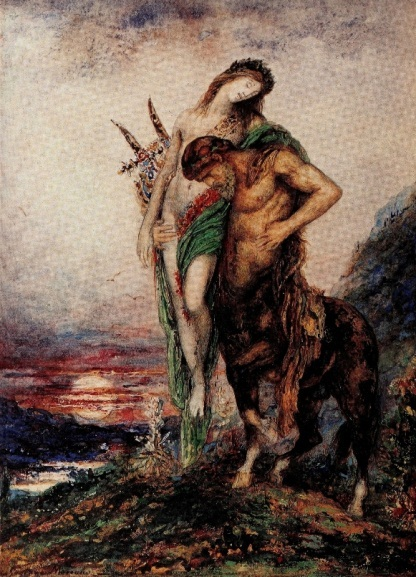

| ２・２倍モテる美人じゃないけど雰囲気美女の作り方: 内向女子ステルス恋テク | |
| 北条風林 | |
| (2018) | |
２・２倍モテる
美人じゃないけど
雰囲気美女の作り方
内向女子ステルス恋テク

著者 北条風林
序章 ４タイプの美女
第１章 雰囲気美女という名に隠された秘密
（１） 大和撫子七変化
第３章 タイプ別雰囲気美女の作り方
（１） Ａタイプは爬虫類型の脳弱おブス
（２） 脳弱おブスちゃんの裏コード
（３） 愛嬌美女のファッションのツボ
（６） 愛嬌美人が陥りやすい穴
第４章 女のモテないスパイラル
（１） 恋は一人でするものだ
（２） 化けてナンボは女性の宿命
第５章 Ｂタイプは最もひよわな虚弱おブス
（１） 真面目系にウケる儚さ美女
（２） 儚さ美女のファッションアイテム
（４） 儚さ美女の落とし穴
第６章 Ｃタイプは気性の激しい性格ブス
（１） 清楚は三歩下がって男を立てる
（１） 内向型雰囲気美女と微エロテク
（Ａ）ネガティブ男子の落とし方
（Ｂ）ポジティブ男子の落とし方
第８章 ステルス胸きゅん弾
（１） 男が胸きゅんになるパターン
１、内股で歩く
２、息を止めてから話す
３、二人だけの世界でそっとボディタッチ
４、ソフトに男を胸きゅんにさせるステルス恋テク
５、リアル小悪魔になってはいけない
第９章 両手に花を夢見てはいけませぬ
（１） レベルを知ることが基本
（２） レベル世界で勝ち抜くモテ術
（１） バスト微エロ
（２） 美脚微エロ
（３） 美肌微エロ
（４） ヘアスタイル微エロ
（５） くびれ微エロ
（６） 番外・弱った男性への微エロ攻撃
（７） 最強話し方微エロ
誰が見ても、「この人モテるのね、きっと」と、思わず口が歪 みそうになるほどはっきりと分かるモテジョはおられます。でも、外見から見て、「女優並みの美女ね」と戦わずして負ける相手というのはそうはいない。
しかも、彼女たちといえども、男なら誰でも簡単に落とせるのかといえば、それほど世の中は甘くない。美女にも、４つのタイプがあり、それに相応して男性も４パターンに分れているからで、組み合わせの相性が良くないと美女も美男もない。
Ａタイプ・凛々しい系からツンデレ系までの「媚 びない清楚 美女」。
端正な美貌とクールさを備えた高嶺の花美女。
Ｂタイプ・真っ正直で明るさ満開の「元気 溌剌 美女」。
野生的な眼力と物怖じしないパワーを備えた肉食美女。
Ｃタイプ・引っ込み思案で自己表現が下手な「儚 い美女」。
センスも華やかさもないけれど控えめで物静かな美女。
Ｄタイプ・華やかオーラを振りまく「表情が豊かな愛嬌 美女」。
社交的でファッショナブルで笑顔が絶えない妖艶美女。
これらの美女は基本形なので、それぞれに百花繚乱のバリエーションがある。美偏差値が７０以上の美女群を少数派とすれば、５０以下の女性は圧倒的多数派に属する。そして、公私共に「私たちはモテるとはいえないわね。どちらかといえばモテない方よね。だって、私たちはちょいブス以下のカテゴリーに属する非美女系だから」と思っているはずです。
その解析に間違いはない。
間違いはないが、「だからモテない」と決めつけるのは間違っている。決して気休めをいっているのではありません。「美女はモテる」は正しい。顔にまでブスが浸透して性格ブスが丸出しになってしまった「正真正銘の性格大ブスさんはモテ難い」も正しい。しかし、「おブスはモテないじゃん」という考え方は「正しくない！」と言っているのです。
第１章 雰囲気美女という名に隠された秘密
（１） 肩の凝らない女性が雰囲気美女
本書は、「内向的な女性」をメインに定めた内向型女性のための恋テク指南書です。内向的な女性には儚 い系美女、ひ弱系美女、ネガティブ系美女、控えめ系美女もいれば、正統派美女だけどまだ開花していない蕾 であるがゆえに内向系美女に分類されてしまう女性も入る。
「私は美女じゃないから、このカテゴリーに入らないわね」と思っている人もいるでしょうが、見た目ちょいブス、おブスの女性でも、実は、この美女カテゴリーに入る女性もいる、というより、むしろ入る女性の方が多い。
なぜなら、第一にルックスではなく雰囲気によって美女として分類される「モテ系雰囲気美女」が多数存在するからです。第二に後述することですが、ちょいブスさんは元より、おブスさんでもモテる雰囲気美女に変換される極意があるからです。
雰囲気美女の一つのパターンが「肩の凝らないホッとくつろげる安心感美女」です。ルックスは美人でなくても、男性が「う～ん、一緒にいてて気が楽。気が楽だから、顔は美人でなくてもかわいいと感じるし、笑顔もキュートに見えて来るし、心がふわふわするから最終結論でいえば、俺的には美人じゃないけど美女なのだ」となってしまう。
基本的には、ルックスは並だけど「いつもニコニコして親しみやすく性格がいい」ので、何かある時にはクラス一の美人より、その子の方を思い出すというタイプこそが「肩の凝らない雰囲気美女」の定番形なのです。
しかし、本書では、そこまでゆかない「自分を出すのが苦手な控えめ系、内向型で寡黙どころか無口になってしまう顔なし系、控えめを通り越してマイナス思考で自分を隠してしまう忍者系」も「隠れ雰囲気美女」とみなして面倒を見る指南書です。
「指南書って、要するに都合よくテキトーに誤魔化しちゃおうという心理学系とかコンサルタント系の占い師がよく使う、何でもフィットさせちゃうぞ系じゃないでしょうね」という疑いは持った方がいいのだけど、「そうではない書物もある」ということですね。
さて、ここで「肩の凝らない雰囲気美女」に該当するタイプを書き出します。これに６割方フィットしていれば、あなたは疑いなく「２・２倍モテる雰囲気美女」になれる可能性を秘めています。
１、立っている時に小学生のように靴をつけている。
これのつま先が前に向かって揃えられている立ち方。
２、背筋が（比較的）まっすぐ伸びている。
３、座った時、両足を揃えて内側に引いている。
４、いつも微笑みを浮かべている。
５、物静かな話し方をする。
６、三人組ならば、一番後ろからついてくるタイプ。
７、分け隔てなく挨拶できる。
８、派手なメイクやファッションをしたことがない。
９、さりげない気配りができている。
１０、自分の快適性を主張しない。
これらに比べて圧倒的論外の女性がこれ。
１、でしゃばり。
２、立っている時に仁王立ち。
赤ちゃんでもアウト？
３、座っている時、足を投げ出す、足を組む。
腕組みしている女性もアウト。
４、マスクや歩きスマホ常用者。
５、毒吐き、噂好き。
６、挨拶ができない。
７、黒目の少ない突き刺す眼をしている。
論外でないタイプは、
次の「玉の輿美女」にランクアップされる可能性が高い。
玉の輿といえば、「資産家に見初 められて、花よ蝶よの何不自由のない贅沢三昧の暮らしができる」と思っている人もいるかと思いますが、そのような事例は二代目、三代目ボンボンの愛人的妻になったようなレアケースでしかない。
実質的な資産家の多くは普通の人の１０倍も自分に厳しい人生を課して、なおかつそれをクリアしてきた人たちなので、決して甘くはない。ほとんどの資産家は妻に事業の手助けをして欲しい、或いは内助の功を果たして欲しいと考えている。
つまり、「玉の輿＝寝て遊んで豪華な生活を送れる」と思っているのならば、それはスーパーレアか漫画もしくはドラマの中だけの夢物語と考えておかねばならない。
では、玉の輿とはどのようなものなのでしょうか。
実は、玉の輿は十人十色なのですね。
人それぞれに玉の輿の「色」が違う。
（Ａ）家族愛型玉の輿
このタイプの人は美人でもなく、切れ者でもない。どちらかといえば、おっとり系しっかり型にしてちょっと鈍いぐらいのタイプなのだけど、それゆえ包容力があって自然とリーダーになっているという、武士でいえば西郷隆盛のようなおおらか系ちょいブスちゃんであることが多い。
間違っても東大卒のような、頭かっちかちやで～とかセレブ風味のわたしイケてるの～という自意識の塊のような意識高い系ではない。その人の手相（過去相と未来相）を観て、タロットでデータベースをみれば、おおむね分かるのだけど、基本的には「肩の凝らない雰囲気美女」であることが多い。
（Ｂ）仕事型玉の輿
前提条件は、社交性があって感情が細やかな情愛型であること。少し雰囲気美女の枠から外れた外向型だけど、これでどこかに隙があって、それゆえ「仕事はできるけど、ほんわかしていてかわいい」という要素があれば玉の輿に乗れる確率が高くなる。
つまり、仕事関係を通じて「この人とならビジネスの相談もできるし、ほんわりやわらかい家庭を築けるかもしれない」と思った資産家と結ばれる可能性が高いというわけです。
男性の戦士は、どうしても「癒しの女性」を求めがちになる。昔から「英雄色を好む」と言われているように、戦う男はストレスが溜まるので色（女性）を求めがちになる。
ちなみに、人に育てられたゴリラのボスは、頂点に立つストレスから馴染みの飼育員に異常なほど甘えることがある。それと似た話とご理解いただきたい。
ここでも、「デキる系や意識高い系などのかわいげのない女性」の出番がないことだけは覚えておきたい。少なくとも、女の花園でマウントを取ってる牝猿のボスはイイ男とは縁が薄いと認識しておかねばならないが、ゴリ押しで世間知らず系の医師などをゲットする論外系女性も少なくない。
万事において人類を断定することは難しい。あくまで確率論の話になってしまう。とにかく、「肩の凝らないほんわか雰囲気美女」は正統派美人より優位に立つことが多いのは事実です。
これが究極の玉の輿型です。既に書いた１０ポイントの、ほぼ全てに該当していれば、もう間違いない。少し欠けている女性でも、それなりにしっかりした「優しくて働き者の男性」と結ばれて不自由のない暮らしをしていることが多い。これもプチ玉の輿とみなしてよいかと思われます。
このタイプ の人は恋テクやステルステクを使う必要はない。否、むしろ使ってはならない。「ん？それって自分の方から仕掛けるなということ」とか、「待つ身でいろっていうことですか」とも思われるかもしれない。しかし、そうではなく、愛され型玉の輿タイプは「テクより運と勘を磨け」ということなのです。
なぜなら、この人の良い受身タイプはダメンズにつかまりやすいからです。これをやっては終わり。運勢の弱いダメンズとの性愛にハマって、自分の容姿が眼に見えて劣化してしまうからで、そのようになってしまった元愛され玉の輿候補は少なくありません。不運は移るんですよ！だから、運と勘は鍛えておかないといけない。
ここに書いているように、「運と勘」は鍛えることができます。そうでないと「解脱」に至るヨーガなどの修行法が確立されるわけもなく、また「求めなさい。そうすれば、与えられる。探しなさい。そうすれば、見つかる。門をたたきなさい。そうすれば、開かれる」（マタイ７の７）などと新約聖書に書かれるわけもない。ピュアな心で求め、探し、門をたたけば、良い人と巡り逢える。だから、「運と勘」さえ磨けば恋テクは必要がない。そういう話です。
もう一つ付け加えておきたいことがある。
１、焦らないこと。
２、こだわらないこと。
「偶然という名の幸運の女神」は実在する。女神はきまぐれ。ふと思い立って幸運をプレゼントしてくれる。だから焦ってはいけない。電車を一本乗り過ごしても、「あら」と言って微笑んで次の電車に乗ればいい。そうすれば偶然の良い出会いや良い発見があるかもしれない。
自分流のこだわりを持つのも「偶然の女神」を拒絶する行為だ。あの美容室でなければ、あのお店でないと、スケジュール通りに運ばないと苛立つとか。こうした「こだわり」を持つ人は「偶然の出会いや発見」に恵まれない。そのように理解しておかねばならない。
自己肯定感を研究している 心理学カウンセラー がいる。私が苦手（嫌い）とするコンサルタント系？に属するカウンセラー。こういうタイプが占い師にも多い。それなりに人気があるけど、話していることがそれとなく耳に入ってくる。
で、いつも「それって占術じゃないよね。過去・現在・未来・心の中を透視しているわけじゃないし。今だけに迎合して面白おかしく話してるだけじゃん。占いと違うじゃん」と思ってしまう。ま、それなりの需要があるようなので、どうこう言う必要はないのだけど、「占術じゃない！超能力じゃない！」というだけの話なのですが。
その心理学カウンセラーが書いているのを読んで感心したことが三つあった。（１）自然体でいられる人は自己肯定感が高い。（２）一見、存在感がない人たちにみえる。（３）彼らを見てまったく不快感を覚えない。ここが本書が書く「雰囲気美女」とフィットする。
「モテない君はイイ女を狙え」の中でも書いたことだけど、健康度が同じでも、自分は病弱だと思っている人の死亡率は、自分は健康だと信じている人の２・２倍も高い。
この「２・２倍」を逆取りして本書のタイトルに採用した。単純にいえば、同じおブスちゃんであっても「私でもモテるのよ」と思っている人は「私はマジでモテないの～」と言っている人の２・２倍モテるということになる。
さらにいえば、「自己肯定感が強ければ」、これも誤解を生みそうなので「肯定感があれば」と書き換えておきます。それで、簡単に雰囲気美女になれて玉の輿までおまけでついてくるかもしれない。つまり、普通のモテ子美人たちより、実際は優位に立っていることになる。ここまでが前説になります。
重要なことが一つある。それは全ての男性に効果を発揮するということではない。つまり、「ターゲットの男性を落とせますか」といったような漠然とした要望には対応していない。どんなタイプの相手なのか不明なのに「落とせますよ」などと言えるわけがない。
このような基本性向があるので、絶対とは言えないものの、「相性が合うと合わない組み合わせ」はある。万人 誰にでもモテるという美女は、基本的に存在しない。殿堂入りといわれるほどの超絶美女だった吉永小百合さんや大原麗子さんだって、必ずしも意中の男性と添い遂げられたわけではない。
超弩級 の美女と超弩級 のおブスの存在確率は、
万分の１以下でしかない。
おバカな男たちがつぶやく美女、おブスとやらは、所詮、個人々々の異なる感性によってもたらされたファンタジー、或いは妄想でしかない。ゆえに、ほぼ、聞き流していい。お間抜けさんたちの言葉を鵜呑みしていい話になることはない。
現実は、ちょい美形たちとちょいおブスちゃんたちの乱立世界。
しかもその差は紙一枚より薄い。
なぜなら、男とは、無意識に、容姿とかけ離れた「本当のかわいらしさ」を探り出す感性に秀でた生き物だからです。男が最終的に決断を下すポイントは容姿ではない。
容姿だけにのめり込む人もいるけど、別にそのようなちょっとちょっと君たちに好かれる必要はない。「容姿に魅せられる」とは「女性を性の対象物としか見ていない」と同義なのだ。こんな無礼な奴らに好かれる必要はさらさらない。こういう「性」の括りだけで女性を見る男性は、ほぼ１００％の確率で浮気をする生き物だし。
高須クリニックの高須克弥院長が言うには、「ぼく自身は、ブスが好き。なぜなら、『美人は秀才、ブスは天才』だからです。ブスっていうのは全体ではブスだけど、目だけはきれい、肌だけは美しいといったどこかしら抜きん出たところを持っている。それに、内面を磨いているブスのほうが話していて楽しいもの」。
中々、含蓄 のある言葉ですね。失礼極まりない勘違い美女たちに比べたら、素朴系のおブスちゃんの方が圧倒的に魅力的でかわいい。良い所がいっぱいある。極端なルックスは高須院長にお任せするとして、そうでない女性は、ほとんどが美女に転換され得る。
それなのに、そうなっていない理由は一つしかない。
それは、あなたが「自分の美女タイプ」を理解していないこと。否、「美女の定義」さえ知らないこと。これに尽きます。スーパーモデルを養成するようなプロ機関の教えは「プロのいい女になると誓え！」「美女になる！という決意をせよ」から始まる。これは既に書いた「自己肯定感」の話と同じです。プロの世界ほどこの『秘密』に熟知している。
男は、無意識の内に、「デートしたい女」「抱きたい女」「結婚したい女」の三つのカテゴリーに分類している。微妙な相違を色分けする能力を無意識に作動させているイキモノといえます。さらにいえば、男は女性より「愛されたい」という願望が強い「甘えん坊」な生き物でもある。
また、男とはいたずらな「競争心」と、それに駆られた「嫉妬心」と勝ちたいくせに恥をかくことを異常に嫌がるという、チープな「自尊心と虚栄心」に支配されて生きている生命体でもある。
「デートしたい女」・「抱きたい女」・「結婚したい女」
「愛されたい」・「甘えん坊」
「競争心と嫉妬心」・「自尊心と虚栄心」
女性がよく言う「容姿 磨 き」は、意外と同性間の争いを意識していることが多い。この戦いはおろそかにできないにしても、「男の本当の心を掴 み取り、溶 かし切る戦略を練 った方がモテに関しては遥 かに実質的にして効率的なやり方である」といえます。
その第一段階として心得ておくべきなのが、美容系の安物ステマに乗せられないことです。「美女か否か、おブス度はいかがなものか」。大きなお世話だ。また、知ったかぶりの安物ライターたちが書く能書きなどもスルーしたい。とかくステマと安物はつまらない。
例えば、ＣＭ界やメディアを席巻する「いわゆる美女、基本的にモテジョ」たちって、「本当の美女たち」なのでしょうか？冷静かつ客観的に観察すればよくお分かりになるように、まぁまぁレベルにすぎない。所詮は売って儲けたいプロダクション側のステマにすぎない。卒業アルバムを見れば整形疑惑？も芸能界では常識です。
それでも、こんなに脚光を浴びている。
それでも、こんなにモテて、ちやほやされてるじゃん。
そう、まさしく、これ。
これです。
これこそが、おブスから「化身 」成ったモテジョたちの姿なのです。そこそこルックス女が、そこそこのくせに。ほどほどフェイス女が、ほどほどの分際で。
「な、なぜ、ここまでモテて、しかもお金がざくざく入るのじゃ」
「掟破りの整形なのか、それとも百円メイクで化けたのか」
「それとも枕営業で駆け上ったのかい」
嫉妬に狂いながら暴言を吐くあなたは世間一般に流布されている情報に「何かが違う。情報が変！」と疑問を抱けている賢い人なのかもしれない。少しは目先のきく女性なのかもしれない。
誰でもスターになれる芸能界。
決して誇張された表現ではありません。
変身できるメイク術？
イケてるファッション？
男心を煽 るテク？
男を弄 ぶ小悪魔のツボ？
このような「タダで拾える断片情報」は役に立たない。
タダほど高い物はない。ステマに踊らされるカモカモちゃんになってはちょとヤバい。そう悟った人だけがモテジョに変身できる資質を備えた女性と言っていい。
モテるにはモテる理由がある。
ぼーと突っ立ててモテる女なんていないんだよ。
誰でも知ってる情報で身を飾って、モテる女もリッチになれる女もいない。そして、「リアルにモテるテク」や「リアルにお金を呼び寄せるテク」は、どこにも公開されない。当たり前の話ですが。
例えば、枕営業などといっても、どこまでが嘘か本当か分からない。実際のことをいえば、枕営業は存在する。それでスターの座に駆け上がった女性も、超レアだけどいないこともない。
しかし現実はどうなのかといえば、ほとんどは性接待に利用されているだけ。予備軍という名前で利用されているだけ。その数は、想像以上に多い。無防備で芸能界という魔界に突入するのは凄く怖い。カモ葱 にされて身も心もずたずたにされても知らないよ。
２年も彼氏がいない女性がいる。
それは、２年間就職活動していなかったニートと同じです。
陰で笑われてる恋愛ニート。
ぼーと突っ立てて就職できるなんてことはない。誰もが知ってる情報を口走って、「デキる奴だ」と評価されることもない。誰もが知っていることを口走ったり、誰もがやっていることをしたりでは、頭一つさえ抜け出せない。誰もができないことをやって、初めてその有効度が表面化する。
その最大、最強の極意は化けることです。
しかも、自分にフィットした化け方で化ける。
女は化けてなんぼ。
女は七回化けて、初めて「女」になれる。
大和 撫子 七変化 。
これは戯言 ではありません。
少女期→乙女期→適齢期→熟女期→淫乱期→閉経期→枯渇期。
その都度、脳内メカニズムも性ホルモンの分泌量も変化する。
例えば、男にとって同窓会で最高のターゲットになるのが少女期、乙女期に学級委員をやっていたような超マジメ系のインテリ女性です。インテリは脳内ホルモンの出し方を知っている。脳内ホルモンは性中枢ホルモンと密接に関係している。
つまり、頭の良い人ほど、脳内麻薬(ドーパミン)の分泌量が多いし、妄想力も卓越しているから、基本的にはすけべぇさんであると思って間違いはない。
そして、学生時代は堅物でガードが固かったインテリ美女が結婚して花園が開発され、性に目覚め出すと普通の女性より淫猥度 が高くなる。その分、ガードが緩む。
かつては高嶺の花だった女性だけど、今は好奇心旺盛な好きもの女性に変身しているかもしれない。しかも、高学歴女性ならば、勉学に邁進できる向上心を持ち合わせている。新しい花園を覗いてみたいという勉学心(好奇心)も旺盛かもしれない。こうして不倫の標的になるし、実際、陥落度も高い。
大和撫子七変化。
その原動力は性体験値。
その推進力は脳内ホルモン。
七変化は、あなた自身の力ではどうすることもできない「脳内物理現象」でもあるわけですから、好むと好まざるにかかわらず、儚い乙女がいつの間にか脱皮して強欲お婆殿に変身を遂げてしまったとしても不思議ではない。少女時や乙女期から何も変わっていない？それでは、もはや「女」とは呼べない。
河鍋暁斎画
つづらの蓋を開ければ女の妖怪がわんさかモード。
男は、いつか必ず、女の変化 した姿に仰天 させられる。
女の七変化こそが妖怪の原型だったのだ！
女性は化けるのが常道の生き物。女は化けてナンボの存在。ただし、「化ける」を容姿に限定していては、いつまで経ってもおのぼりさんです。「田舎者じゃん、ダサくね？」と小馬鹿にされてしまう。
化けるべきは「心」です。
それを指摘しているのが、
宝塚歌劇団秘蔵の「ブスの２５箇条」の裏コード。
人の脳はポジティブに造られています。脳には、ネガティブ対応の設定それ自体が存在していません。つまり、「悪い所」を指摘されても直せないように設定されています。ゆえに、「あなたはここが悪いから直しなさいね」という指摘は、ただの嫌がらせでしかない。
仮に真面目な指摘であったとしても、その人は脳科学の基本さえ知らないど素人とみなされる。だから、そのような人とは真面目な会話を交わさない方があなたの身のためですよ！例えば、「お前って、まじダメだな」といつもくさしてくるような男は、１分も付き合う必要はない。
「今日も、かわいいね」
「あっ、それっていいじゃん」
「なかなかデキるじゃねーかよぉ～」
何でもいい。ことあるごとに褒めてくれる人と付き合うと、自分の良さが育てられ、磨かれてゆき、最強アイテムとしての「自信（自己肯定感）」が芽生えてくる。（但し、何でも褒めるいい加減な奴はダメ）。自分に自信を持たせてくれる人が、本当にいい男なのです。
それは、自分と自分の関係についてもいえることです。
例えば、スーパーモデルを養成するようなプロ機関の教えは「プロのいい女になると誓え！」という命令から始まります。すべてはコインの裏表。短所があれば長所がある。「良い所のない悪い所」などは理論的に言ってあり得ない。
だから、プロ予備軍は「美女になる！」という決意だけをイの一番に叩き込まれる。すべてのジャンルにおいて、「自分を説得できた人」だけが勝者になれるのです。
宝塚歌劇団もプロ世界ですから、やり方は同じです。そして、そこに存在する超秘術が「おブスの２５箇条」。それは、その人の「隠れている美女度」を照らし出す闇夜のライトアップなのです。ゆえに、モテジョ変身の『裏コード』になり得る。男心をくすぐる「本当のかわいらしさ」を演出できてこそ真のモテジョになれる。そのツボがこれ。
「甘ったれ男の愛されたい願望」
「へぼい男の競争心」
「へたれ男の虚栄心」
これらを、ちょっとだけ叶えさせてあげる。「ちょっとだけよ～」は、基本的に単純である男たちを相手にする時の絶対兵器と覚えておきたい。
男が選ぶ「一生添 い遂 げたい相手」は、自分を振り回すようなわがままな美女ではない。それなら、むしろ自分が快適に過ごせるであろう、ちょいおブスちゃんの方を選ぶ。
表に出てこない地味な情報ですけど、そこにこそ真実が隠されている。男たちから、このように見られたいと願う女心に明日はない。性的魅力はいつかは必ず劣化し、飽きられてしまい、捨てられてしまうからです。
さて、あなたが化けるべき女性像はどのタイプなのでしょうか。このツボを外すと、すべての努力が裏目に出てしまう。「あなたにフィットするツボ」に、「ハメて化けて」こそのモテジョ化身 ロードなのです。
女性像は三つあります。その判定に役立つのが「おブスの２５箇条」です。まず、以下に記す三つのタイプから、あなたがどのタイプに当てはまるかをチェックしてみましょう。それによって「あなたにフィットする雰囲気美女パターン」が特定されます。
Ａタイプ
①笑顔がない
②お礼を言わない
③美味しいと言わない
④口元がへの字の形をしている
⑤眼が人を刺すように白い
⑥他人を信じない
⑦人のアドバイスを受け入れない
⑧問題意識を持っていない
Ｂタイプ
①精気や意欲がない
②希望や信念、自信がない
③愚痴をこぼす
④声が小さくいじけている
⑤なんでもないことに傷つく
⑥すぐに眼が死ぬ
⑦悲観的に物事を考える
⑧存在自体が周囲を暗くする
Ｃタイプ
①いつも周囲が悪いと思っている
②他人に嫉妬しやすい
③責任転嫁がうまい
④他人につくさない
⑤謙虚さがなく傲慢である
⑥他人をうらやむ
⑦自分が最も正しいと信じている
⑧自分がブスであることを知らない
最もチェック項目の多かったタイプが、あなたのおブスちゃんタイプです。宝塚歌劇団が教えているのは、「美女度・モテ度はその人の心と連動されている」という指摘です。
「モテジョ＝美女・可愛い子ちゃん」は、性的魅力度の方程式であって、必ずしも結婚適格者的な雰囲気美女とリンクされているわけではありません。
性的に抱きたいと思われる美女よりも、一緒にいたい美女や一緒に暮らしたい美女の方がランクは上になる。どうせ美女になるのなら、どうせ雰囲気美女魔術を仕掛けるのであれば、格上の美女ロードの方がおススメになる。つまり、「抱きたい女」より「一緒にいたい女」「一緒に暮らしたい女」に化けられた方がお得になります。
心がおブスだと、表情もおブスになる。
表情筋は「記憶形状」なのです。
歳月と共に、容姿のおブス度が固定化されてしまう。
嘘だと思うなら、ヒッキーになって籠ってみれば良く分かる。
人と交流しない、会話をしない、笑わない。
そうすると表情筋が固まって、見事な鬼瓦 ブスができあがる。
おブスとモテジョとは、そういう物理的な話に帰結する話でもある。短所のすべてはコインの裏側であり、脳に欠点を直す機能は備えられていない。
ゆえに、「おブスの２５箇条」は「美女の２５箇条」になる。
要は、物の考え方、心の向き方一つなのです。
コツとツボさえ押さえることさえできれば、おブス３タイプは、楽々と、美女３バージョンに変換される。女性が思い悩んでいるほどモテジョの道は過酷ではないのです。
笑顔がない、お礼を言わない、美味しいと言わない、いつも口元がへの字の形をしている、眼が人を刺すように白い、他人を信じない、人のアドバイスや忠告を受け入れない、問題意識を持っていない。この爬虫類型脳弱ブスから作られる雰囲気美女が愛嬌美女です。
脳の発育が悪く、脳細胞の数も少ない脳弱おブスちゃんタイプです。知性を司る新旧の哺乳類脳が弱くなると、その下に眠っている古代の爬虫類脳(本能脳)が鎌首をもたげてきます。
理屈抜きの物理現象です。その結果、「への字の口」「刺すような白い目」と化し、爬虫類そのものの性向が露わになってきます。良いとか悪いとかという話ではなく、脳がもたらす物理的現象であるところが怖い。
メドゥサ。ジャン・デルヴィル画
頭髪は無数の毒蛇。見た者を恐怖で石に変えてしまうとギリシア神話に描かれているメドゥサは、攻撃的にして拒絶タイプの爬虫類系脳弱おブスちゃんの化身そのものです。
数千年も語り継がれている伝説的怪物メドゥサに匹敵する脳弱おブスちゃん。しかし、「実は、その裏は、最も愛されるおおらか系の愛嬌美女なのだ」という変幻自在なところが人類の不思議さ、面白さであり、同時に、「女」の恐ろしさでもあるのです。
それは、断崖絶壁に咲く黒百合の如き孤高の高嶺の花とは真逆の、ひまわりのように明るくおおらかに咲き誇る庶民の花です。花言葉は「肝っ玉かあさん」。
知性も教養も乏しいかもしれないけれど、その代わり、生活の知恵に満ちている最も生活力のある女性バージョン。それが愛嬌美女です。
「ずぼら＝図々しい＝おおらか」が誰とでもカップリングできる敷居の低さを生み出すがゆえに、昔から、最もモテる美女として多くの需要をもたらし続けてきた女性像です。
「良く働く生活力のある女性」。繊細とはほど遠い脳天気傾向を秘めているだけに、河鍋 暁 斎 が描くお福のような下品な図々しさもあれば、ルノワールが描く画像のような茫洋した母性愛の豊かさもある。神話に登場するだけあって、女の中のメスそのものといえるかもしれません。

淫猥 おばばのおおらかお福だよ～。
女の中の女のあるべき姿。愛嬌美女の最強バージョンは最もモテる可愛い子ちゃんタイプに見出されます。色が白く、ぽっちゃり丸顔に二重瞼で目元ふっくらのつぶらな瞳の童顔系。これで口角が上がっていたら疑いなく激モテ愛嬌美女です。
この最高峰から一枚二枚落ちてもこのタイプはモテます。
ここが庶民の花のしぶとさ、いや、強さなのです。
愛嬌系は相当な可愛い子ちゃんからちょいおブスレベルまで、その容姿はさほど問われません。それに、「脳がゆるい→深く考えない→本能的である→こだわりが少ない」という傾向も帯びています。
要約すると「間口が広い」。
理想より現実を選ぶ合理主義者でもある。
ですから、超可愛い子ちゃんでも相手の容姿にこだわらないケースが多い。いわゆる「美女と野獣」のカップルが最も成立しやすいバージョンといえます。
柔軟度は高いけど、その分、本能的現実度も高く、相手の経済力や社会的地位に弱い。こうして、結果的にではあるものの「愛嬌美女」と「お金と権威と誠実さを兼ね備えた野獣」とのカップリングが成立する。
愛嬌美女は金に弱いが、その分、金銭感覚も鋭い。誠実に働く男性と結ばれるとコツコツと蓄財できる可能性が最も高い美女タイプなのです。
例え、あなたが「コツコツは苦手～」というずぼら系であったとしても、旦那がコツコツ型なら大丈夫です。「あんただけが頼りだからね、おねが～い」と得意の丸投げ系おんぶにだっこで問題なしが愛嬌美女の利点？でもあります。
愛嬌美女は、基本、小太り系です。ですから、ファッションは濃色で引き締めた方が見た目は良くなりますが、実は、それほどこだわる必要はないし、多分、そのようなアドバイスを受けたところでお構いなしに好きな物を着てしまうと思う。
「超ぼっちゃりなのにボーダー柄を着るのは法律違反だよ」と言われても「でへへ」と笑いながら、「次もまたボーダーでした」は日常茶飯事のこだわりの少ない脳弱タイプだからです。というのも、ぽっちゃり好きの男はどこまでぽっちゃりになっても許せるからです。
「どこまでがぽっちゃりで、どこからおデブになるのですか？」という質問をよく目にしますが、男は好きになったぽっちゃり系なら相当な状態になってもＯＫというケースは少なくありません。
逆に、夫や彼氏が「ちょっと太ったんじゃね」と苦情を言うケースを時々、耳目にしますが、こういうタイプは本来は愛嬌美女とフィットする男性たちではないのです。
ごく普通の男性でも女性が嫌う二の腕のぷよぷよたるみなんて、全く問題にしませんから。「デブッたね」という男は、はっきり言って要らないんじゃないですか。
「痩せすぎの女性」を好む男性は高確率で「貧乏性」です。
ヤクザでも、細身が好きな仲間を「おめぇはパワーがねーから、か細いのが好きなんだよ～」とディスったりすることはある。パワーのある男性は、そりゃね、すこぶるいい女だったら別でしょうが、例えば同じルックスなら太目の女性の方を選ぶ。
なぜなら、その方が本能系だから。一方、細身好きの男性はぽっちゃり好きの男性に比べて、「働きも悪く、稼ぎも悪い。年収は百万円以上も低い」とされています。ね、要らないでしょう。
裏コードが愛嬌美女でも、脳弱おブスのまま何の変化も生じないようなダメンジョは飽きもせずイケメンのおっかけに夢中だけど、愛嬌美女に目覚めると男の容姿への関心が薄らぎだす。
愛嬌美女変化ならずのダメンジョたち。
愛嬌美女とその相手となる男性は、お互いに「容姿より相性」「上品な愛より気楽な愛」「見た目よりも実質」に魅了されるケースが多い。なぜなら、男はその娘のエレガントさやフェミニンという心模様より肉感的魅力の虜になることの方が多いからです。
古今と東西を問わず、多くの歴史的人物たちが駆使し続けてきた最強の処世術が「いい人を演じるいい人の術」です。例えば、圧倒的な国民的人気を博してローマ帝国第二代皇帝候補と目されていたのが軍人ゲルマニクスだった。
スエトニウスは「ローマ皇帝伝」(国原吉之助訳、岩波文庫刊)で次にように書いています。「端正な容姿と優れた胆力、ギリシア語とラテン語双方の雄弁や学識に見られる卓越した才能、他人への比類なき温かさ、人から感謝され、人の愛情をかちとろうとするその驚くべき熱意と効を奏する努力」。
彼は中東への遠征中、２９歳の若さで病死したが、その息子カリグラは国民の多くが捧げる父ゲルマニクスへの思慕のおかげで第三代皇帝に即位できた。
今でも、「いい人を演じるいい人」は少なからぬ数を形成しています。とりわけ公務員組織のような個人の才能に秀でている必要のない巨大組織においてよく見られます。彼らは、イエスマンに徹することができれば確実に出世します。
しかし、それは典型的な保身術です。
実力なき者が猫をかぶった演技にすぎないから、演じ続ける心労で病に倒れたり、トラブルを処理し切れずに自ら命を断ったりの事例が後を絶たない。周囲の人たちが「なぜ、あんなやさしい人が」と驚く凶悪犯罪者の多くもこのタイプです。
「人生すべて演技」という魂と遊離した生き方は、「公」に捧げてこそ活きるもので、それを「私」に用いると潰れてしまうことの方が多い。人生って、どこかで辻褄を合されるものなのでしょうか。
「いい人を演じる処世術」は一種の黒魔術です。
敵を倒して願いを叶える秘術なのですが、使い方が正しくなければ自分も倒されてしまう。諺でいえば、「人を呪えば穴二つ」。一つは敵を落としこんだ穴。もう一つは自分が入る墓穴。いわゆるブーメラン、因果応報。ゆえに黒魔術と呼ばれている。
吉凶渦巻く黒魔術は、どちらかといえば気性の激しい性格おブスちゃんでないと使いこなせない。如何に図太い愛嬌美女といえども、基本が脳弱おブスちゃんですからね。自己を苛烈に制御する資質が求められる「いい人処世術」を駆使するのは困難かと思われます。
そこで、次に、愛嬌美女御用達 の必殺黒魔術を紹介します。しかし、その前に「なぜ、男に対して黒魔術としてのあげまんの極意が有効なのか」というメカニズムについて触れておきたいと思います。このツボを知っているのと知らないのとでは使い方に雲泥 の差が生じてしまうからです。
褒めて、甘えて、頼って、尽くす。
男、いや、ほぼすべての生物のオスは戦いを通してメスを獲得する道を強いられています。「戦いは男(♂)の本分だ」。男にとっての最優先課題は、メスを巡って他の男と競い合うことです。
「行動半径狭し、精力弱し、戦い怖し」
女系 一族 と化した感のある草食男子でも、心の奥底には「戦いへの渇望」がちょろちょろ程度には流れている。そこで考案されたあげまんの極意が、男の競争心に媚 びて男を気持ち良くのぼせあげさせる「褒めて、甘えて、頼って、尽くす」です。
例えば、「美味しい料理を出す」もあげまんの極意の一つです。男は美味しい料理に感激したり、妻に感謝したり、「これからも美味しい料理を食べたい」という思いが脳裏に刻み込まれて仕事に頑張るようになったりする。
その結果、統計では「美味しい料理」を工夫しない妻を持つ男性の年収は４００万円と弾き出されている。逆に、「美味しい料理」を出す女性を娶 った男性の年収は５３０万円となっている。
恐ろしい統計です。サービスして、男を気持ち良くさせることから生じる「無意識の実利」がこれなのです。はっきり言って、あげまん作戦を実践できない妻は「アホ」としか言えません。
男は謎や不思議や未完成などの疑問系が好きな生き物ですから、「どうしてあなたができないのか不思議だわ」などと言われるとやる気が出て燃え上がったりする。これは「間接的な褒め言葉」という高等テクです。
実力もないくせに、自分で決めたい我流好きの自惚 れ男は少なくありません。我流ということは、学ぶ能力もなく、学ぶ努力もできない、脳と精神が共に脆弱 であることを露呈 しているのも同然なのですが、オツムがいまいちだと、中々、そのことに気づかない。
ですから、女性からみれば「あんた何様のつもり」という感じになってしまう。そこをあえて封印して「あなたは凄い所を持っている人だから、そうしたいのなら、それでいいわよ」と頼っている風を演じるのも高等テクです。
男は「何も言わないでも分かってくれ」という阿吽 の呼吸が好きな身勝手で我儘な生き物です。「言わなきゃ分かんねぇよ～」と絶叫するくせに「言わなくても分かってくれとは何事よ」と怒る心を抑えて「あら、わたしが言わなくても分かったのね」的な甘え方も高等テクに入ります。
男は非現実が好きな妄想型の生き物ですから、想像を膨 らませてあげるような会話をしてあげると喜びます。例えば、「もし、あなたと駆け落ちするようになったらどうする」とか、「もし、わたしが今、キスしてと言ったらどうする」のような甘えた頼り方をされるのに弱い。
男は競争心の強い生き物で、ヤクザ映画を観たらその気になって、肩で風を切って歩き出すトンデモ系の生き物でもあるので、男が何かしたら「こんなの初めて！」と驚いてあげるのもいいんじゃないでしょうか。
こうした手練 手管 が「褒めて、甘えて、頼って、尽くす」のベストパフォーマンスになります。総じて「あなたが一番頼りになるわ」「いつまでも、あなたにすがっていたい」「あなた以外は虫けら同然だわ」などとこちょこちょやってあげればイチコロニコロキンチョールになるはずです。
これらのテクは男の子の教育にも応用できます。悪い所を指摘するとか、叱って伸ばすスパルタ式が最悪の教育法です。褒めて伸ばしてこそ良妻賢母と称賛されます。
ただし、これは男の操縦法なのです。
操縦という「核」だけは見極めておきましょう。だから執拗に褒めすぎると「褒める値打ち」を減らしてしまいます。これは下手なやり方です。「褒め殺し」のようになって、いたずらに相手を図に乗せてしまう。
これは失敗作です。あくまで男を気持ち良くさせ、「しっかりと働かせて稼がせる」ための手練手管にすぎないのですから。手段と目的を取り違える本末転倒だけは避けたいものです。
そこのところさえしっかりと認識できていれば、褒め方や甘え方、頼り方、尽くし方の手綱 のさばき具合がよく理解できるようになるはずです。相手の負担にならない程度の「淡泊なあげまんテク」は絶対の前提条件になります。ま、どちらにしても結婚してしまえば、ここぞという時しか使わなくなるのですがね～、マジで。
可憐 なる妖怪 鷺娘 ・月岡 芳 年 画。
鷺 が詐欺であっても気にすることはない。ユリウス・カエサルや織田信長に比べると一枚格は落ちるけど、ローマ帝国初代皇帝アウグストゥスも、江戸幕府の開祖徳川家康も、詐欺師的人心 掌握術 の達人だった。
二人の共通項は律儀、小心、堅実の狸親父。すなわち内政型策士だったことに見出されます。二人は糞真面目に「いい人を演じるあげまんならぬあげちん政策」を実践し続け、ついには天下を取り、長期の政権を確立させた。
「褒めて、甘えて、頼って、尽くす」
必殺の黒魔術であるがゆえにできれば使いたいのだけど、脳弱おブスちゃんは緻密性 に欠く傾向が強いから、ま、テキトーにちまちまと使っているぐらいでいいかもしれません。
有効なのはボディタッチテクですね。
ここで豊満が武器になる。
若い男性は、性偏差値が低いからおデブをディスることもあり得ますが、「性技も経済力も希薄な未熟児など眼中になし」が愛嬌美女の基本スタンスですから気にする必要はありません。
標的は成熟した男性です。
そして、性偏差値があがるほどに、年齢を重ねるごとに、男は豊満に生理的快感を覚え出す。元来が硬い系の男が熟すれば「やわらかさ」に惹かれて行くのは自然の摂理なのです。
そこで炸裂すべきがボディタッチになる。
「男の手に触れる、握る」を繰り出す女性もいるけど、これは互いに親密になってからの話ですね。それ以前の段階でこれをやると引かれますからご注意ください。誘いのタッチとしては、手のひらを男のツボである二の腕に押し当てるのがいい。指でつんつんはＮＧです。感触が硬くていらつきます。
興奮して怒鳴りそうになる男をなだめるのに有効なのは、唐突に、「ちょっと右手出して！」ということです。これで、怒りの矛先 がへし折られる。普通、男というものは組織に生きるイキモノですから、上から強引に言われたら何となく従ってしまうものなのです。
そこで、「なんだよ、いきなり！」などと文句を言いながら、右手を出してきたら、その時点で男の負けが確定します。そのときは、「あんたはねぇ」などと言いながら、両手で男の手を握り、小指の真下に位置する手のひらと手首の境目当たりを押します。
ここが、「神の門(神門 )」と呼ばれる、神経の高ぶりや緊張をやわらげてくれるツボです。ここを親指で押します。すると「怒りの興奮」が鎮 められておとなしくなります。そこで、「あんた、悪いのはどちら？」とそっと囁 いてあげると、仏陀様の掌 の上で踊らされる孫悟空のようにおとなしくなってしまうはずです。
ルノワール画
最強の「男性二の腕攻略法」その壱は、絵画のように片手を相手の膝に置いて立ち上がる時に、何食わぬ顔で乳房を相手の二の腕にぶにゅと押しつけるテクです。
ルノワール画
最強の「男性二の腕攻略法」その弐は、「なになに、どうしたの」という調子で相手の話を聴きに行くふりや、相手の手元を覗 きこむふりをして接近し、素知らぬ顔で豊饒 の乳房を相手の二の腕にぶにゅと押し付けるテクになります。
少し親近感を共有できるようになれば、例えば机と相手の間にできた狭い隙間を通る抜けるふりをして、やわらかいお腹やお尻を押しつけてみるのもいい。相手の背中に抱きつくようにしてやわらかい乳房を押しつけるのもありになる。ただし、これらの強引テクは人目を避けてやるのが基本になる。
「このような超積極攻撃など出せるわけないじゃん」とひるむ大和撫子は少なくないかと思いますけど、外人は平気でやってきますよ。で、トンビに油揚げをさらわれたりするのであります。
ただし、執拗はＮＧになりますよ。
「１日に１回が限度」という取説をお忘れなく。
これで、妄想癖が強い男に醸成 させる時間を与えます。この「間 」を取って、焦らずに、じっくりと「熟成」させるのが高等テクニックというものです。
慌 てる乞食は貰 いが少ない。
果報は寝て待て。
やがて脳内にピンクの毒キノコがにょきにょきと生えだした頃をみはからって「メシでもおごれ」と言ってやろう。女性が勘違いしていることの一つに「愛されたい」は女の特権だと思っていることがある。
実際は「愛されたい」と思っているのは根っこが甘えん坊の男の方なのだ。だから、遠慮なくボディタッチ系スキンシップを繰り出してくれる「譲歩型の女性」は、男の甘え心と虚栄心を満たしてくれる。
しかし、露骨なあげまん作戦やタッチ行為は同性の妬 みや顰蹙 を買うおそれがある。できれば同性の前では避けたい。なお、男性から「腹黒女と思われないだろうか」は取り越し苦労になる。そのような繊細な男は少ないし、そこまで繊細な男は女々しい生活力の低い男なのでスルーして後悔することはない。
なんと言ってもアウグストゥスや家康も駆使した天下 御免 のまっくろくろべぇ狸作戦なのですから、気にする必要はさらさらない。「文句があるなら、狸親父の家康様がお造りになった江戸の町から出て行っておくんなまし」と吉原 の花魁 訛 りで、「どうぞどうぞ、生まれ故郷の田舎にお帰りやす」と言ってやればいい。
日本の夫婦のセックス回数は、世界でも指折りの少なさです。なぜ、セックスレスになってしまうのでしょうか。色々と理由はあるでしょうが、最も大きな要因がボディタッチを含めたスキンシップが少なすぎることと言われています。
触れられると気持ちが良い。
さわられると性的なスイッチが入る。
これは、哺乳類世界共通の脳内麻薬効果です。
お互いに触れ合うと「絆」のオキシトシンが分泌される。
お互いに撫で合うと「癒し」のセロトニンが分泌される。
だから、西の世界ではハグやキスが常識マナーになる。
下手なんですね、日本人は、スキンシップが。
脳内フェロモンの働きに無知なんですね。
スキンシップを猥褻と思っている干上がった系のヒステリー高齢者たちが多すぎる。少し余談の部類に入るかもしれないけど、「演技のデキる人は刑務所でも居心地良く暮らすことができる」と常習犯罪者が述懐 していた。演技力はいつでもどこでも有効なテクニックなのです。
「正しい者など一人もいない」という人類世界では、ある程度の嘘や演技がなければ「人生の潤滑油」を欠いてぎくしゃくしてしまいます。最後の章に男女別結婚不適格度の判定法を記していますが、「適度な嘘」をつけないようでは女性同士の競争も勝ち抜けず、遺伝子も残せないというのが生物学の常識です。また、夫婦円満とはいかず家庭も維持し切れないかもしれない。
いずれにしても、ボディタッチ、スキンシップによる脳内フェロモンの威力は絶大です。この現実を知っているから、悪知恵の働く女性たちはぶりっこなどの演技派を強敵と定めて「いやらしいわね、そこまで媚 びて歓心 を買いたいの」などと非難し、以てライバルを排斥しようとするのです。
女にとっての最大の敵は女です。
有能な女性を叩くのは女の本能です。
この手の競争意識の凄まじさは男性の比ではありません。
「自分で稼ぐ」より「相手に稼がせる」。
これが女の王道です。
お友達は皆おブスちゃん。
合コンにはおブス連行が常識なのよ。
有能な男の奪い合いは命がけなのです。
これをあざといと非難する人たちがいる。
これは負け犬の遠吠えですね。
負け犬の嫌らしい嫉妬心ですね。
負け犬をやっている限り栄光が訪れることはない。
だから、むしろ嫌がられる演技派でいたい。
嫉妬するより嫉妬される方に回りたい。
何と言っても上玉の男を捕まえて、玉のような子を生んで、裕福な生活をした方が勝ちの世界ですから。その時には、ウザい負け犬たちとは縁も切れていることでしょうし。「勝てばいいのよ」は下品な言葉ですからここは腹の中にしまい込んで、とりあえずは勝ち組になりたいものです。
歌川国芳画 寄せ絵
「みかけは怖くみえるけど、とてもいい人だ」
大勢の人がよってたかって。
とうとう、いい人をこしらえた。
兎角 、人のことは人にしてもらわねば、いい人には成らぬ。
歌川国芳画
「開運出世合体七福神」
「運も人々と付き合ってこそ招来される」
人が織り成し紡 ぎ合うこの世の招 福 は、まさに人の力によって為されるものです。一人で頑張っても、とどの詰まりは糞 詰 まりになるのが関の山と江戸時代から語り継がれている一つの真実です。人生は如何にいい人(男と女)と巡り逢い縁を紡 ぎ合うことができるか。それにかかっていると言って過言ではないのです。
愛嬌美女は男の間口が広い。
しかも深く考えない本能系が少なくないから、快楽を優先して遊び人と結ばれてしまったりする。これだけは避けたい。遊び人が金持ちになり、かつ、なり続ける確率はゼロに近いからです。
出産してみればすぐに分かることですが、庶民の花は母性の星なのです。豊満な肉体も本能系の脳内メカニズムも、すべてが家庭と我が子に集約されている。愛嬌美女の幸せは家族愛にこそ見出される。
これも出産してみれば分かることですが、結婚前には夢中にさせられたはずの「男の遊び人的軽快さ」や「イケメン風情」などは、眼中からきれいに消え失せてしまいます。これは、出産と共に「恋愛脳」が消失し、代わりに「育児脳」が台頭 してくるからです。
ルックスほど使えないものはないのさ。
本当のやさしさとはね、お金を稼いで来ることなのよ。
すべての愛嬌美女がいつかは実感する言葉です。
「だから、遊び人なんてさ、人間のクズなのさ」
これも口癖になると思う。
モテない女性がさらにモテなくなる悪循環の一つに女性同士による恋愛相談があります。男と女はＤＮＡや脳内メカニズムが恐ろしく異なります。
つまり、素のままでは互いに理解し合えないように設定されています。およそ７項目にも及ぶ決定的な相違があるからこそ人は自分に無い物を求めて恋愛に激情を捧げてしまうのです。
ロミオとジュリエット。フォード・マドックス・ブラウン画。
敵同士のロミオとジュリエットのように、障害物があればあれるほど恋の炎が燃え上がるのも「お互いの違い」という落差を埋めるように設定された、「衝動」という名の遺伝子が仕掛けた罠にすぎないのです。
だとすれば、男を理解し合えない女性同士で語り合って「モテる話」を作り出すことができるでしょうか。答えはＮＯです。女性同士がもっともらしく恋愛問題を語り合えるのは「男女の相違」に合意できたからではない。互いに「男との違い」について共感し合えたというだけにすぎない。
「男ってさぁ」と互いに傷口を舐め合い「得ることのない無駄話」を楽しむ。それはそれで、ストレス解消になります。ガールズトークというのはそういうものですね。男のそれのように「結論」を求めるものではない。それでも、「女友達同士による恋の相談事」はバッドです。
お互いに気楽な愚痴の言い合い、罵声 による鬱憤 晴 らしというのは百も承知のことかと思いますが、それでもチクリと気になる発言があった。それが変に気にかかる。
ほとんどネガティブな話題です。例えば、「男なんて女の肉体を狙っているだけなんだから、こっちも、どれだけ貢がせるかに命を賭けるべきよ。恋とか愛とか、好きだとか嫌いだとか言ってるようでは、まだねんねよね」とかいうセリフが妙に頭の隅にこびりついていたりする。
そして、男女関係でモメたときに、ふと、脳裏の片隅に湧いてくる。「そうよね、恋とか愛とか、おままごとしてる場合じゃないわね。割り切らなくっちゃ」。こういうイージーな間違いに流されると一生を棒に振る人生を送ってしまうかもしれない。どうあがいてもこの世は人の世ですからね。誰の支えもなしで生きてゆける人は極めて特殊な人で、普通の人はあらゆる面で「負」を背負いつつ絶望の淵を彷徨 わざるをえなくなる。
だからね、人は、苦労を承知で結婚するわけ。
一人より二人の方が圧倒的に強いのが分かっているから。
生涯の伴侶は命を賭けて探すに値します。
そのための絶対のアイテムが相性ですね。
漫才師たちがほぼすべて丸顔と面長でコンビを組んでいることからお分かりになるように、おおむね、友達とは気質も好みも正反対同士であることが多いものです。ですから、「丸顔小太り大雑把系」と「面長やせ気味神経質系」の組み合わせが多い。もちろん、好みの男性の体型も気質も全く正反対のことが多い。
丸顔の女性がやせ気味神経質な男性を好きになって友達に相談したとしても、その男性と同型の女友達は決していい返事をしないと思う。やせ気味神経質の女性が同タイプの男性に対して「いい男よね」などという確率は恐ろしく低い。
そして、燃えかけた恋の炎が吹き消されてしまう。いずれにしても、女友達同士の恋愛談義は百害あって一利なし。だから、こういう警句がテッパンになるわけです。
恋は一人でするものだ。
「顰 に倣 う」という荘子に記された故事成語があります。中国古代四大美女とうたわれ西施 には胸が痛む持病があった。ある日、その発作に襲われた彼女は胸元を押さえ、顰 （眉間 ）にしわを寄せた。
その姿からは「女のはかなさ」という男の父性愛を刺激する美しさがにじみ出ていた。彼女が里から歩いて来るそのなんともなまめかしい姿に、里の人たちは皆、目を奪われた。
西施が胸元を押さえ、眉をひそめた様子に多くの男たちが魅了されているのを見た一人の醜い女が、西施のまねをして、胸元を押さえ、眉をひそめて、村を行ったり来たりした。するとその顔はさらに醜くなり、病をうつされまいとして人々は、すぐに戸を閉めてしまった。
こうして、「顰 に倣 う」という話は、「むやみに人のまねをするのは愚かなこと」という故事になったのです。自分と違うタイプをまねても上手く行かない。ここを意識しておかないと間違った穴に落ちてしまう。
とにかく、恋は一人で思案してするものです。相談するのであれば、酸いも甘いも知り尽くした社会経験豊富で聡明な高齢者に限ります。「亀の甲 より年の功 」です。
「お祖母 ちゃん子は三文安」という言葉があります。祖父母は、一般的に孫に甘いものです。だから、親に厳しく育てられた子供よりも、祖父母に甘やかされて育った子はわがままになりがちで、しつけも行き届いていない。
一理ありますが、子供の時に祖父母と多く会話した人は世間のことを知っているから出世しやすいという見識もあります。重大な人生の悩みがあるときは賢いおじいちゃん、おばあちゃんの意見を訊くのが一番安全な方法です。
そういう人がいないときは、やはり書物ですね。この書物だって、普通の人では及びもつかない豊富な体験や歴史、哲学、心理学、脳科学、生物学、宗教などの体系的知識に裏打ちされた情報を綴っているわけですからね、普通の人によるアドバイスより密度は濃いと思いますよ。
（２） 化けてナンボは女性の宿命
猿のメスは発情期になるとお尻が赤くなります。オスは、このサインを見て発情します。非排卵期、すなわち妊娠の可能性が低い時期に精子の無駄弾を控える省エネ作戦です。
オスが発情しないと困るのは誰でしょうか。
それはメスです。
なぜなら、性はお金と同じだから。
性で釣らなければお金にならない。
女性が綺麗になろうとする最大の理由は、それがお金になるからに他ならない。女性の裸体は高額紙幣と同じ価値がある。そこで、人類のメスは何時でもオスを誘うことができるように排卵期を隠す技を身につけた。
さて、「人を騙すために為すべき最初のこと」とは何か。それは、まず自分を騙すことです。それによって、嘘に信憑性が付与されます。この結果、人類の女性は自分でも排卵期が分からないようになってしまった。
男を騙す、男に嘘をつく。
常識的には悪女と思われるかもしれません。しかし、適度に嘘をつけない男女は、共に、「結婚不適合者である」とするのが最新科学の示す見識です。生物界では、この種の欺瞞は虫でさえ行う超常識であり、人類固有の戦略ではありません。例えば、ガガンボモドキと呼ばれる肉食性の昆虫があります。
ガガンボモド
ガガンボモドキのメスは、オスが捧げるエサへの対価として交尾を許します。その意味では、生命体における最古の職業は売春だったといえます。
エサが小さいとメスは交尾の最中、射精する直前に中断して逃げ去ってゆきます。「対価に応じた快楽しか提供しないわよ」というわけです。
さらには、エサをだまし取ろうとメスのふりをして接近するオスも現れます。ガガンボモドキは、人類世界で繰り広げられる夜の社交界の縮図のような修羅場を日々演じ続けているのです。
「恋は怪しい夢芝居、たぎる思いおさえられない。化粧衣裳の花舞台、かい間見る素顔可愛い。男と女あやつりつられ、心の鏡のぞきのぞかれ。こなしきれない涙と笑い、恋はいつでも初舞台」(作詞作曲 小椋佳) 。
梅沢富美男が歌う夢芝居の歌詞ではないけれど、脳の構造だけでも５０～８０％も違うがゆえに絶対に理解し合えない男と女の世界において、だましだまされ、あやつりつられ、心の鏡をのぞきのぞかない素のままに生きる男と女なんて、虫以下の存在、遺伝子を残すに値しないヘタレでしかない。
化けない女、化けられない女は、逆に、お化けなのだ。
月岡芳年画
ふー、化けるのが女の宿命だといってもさぁ。
ここまで化け方が下手だと、誰にも相手にされないぜ。
精気や意欲がない、希望や信念、自信がない、愚痴をこぼす、声が小さくいじけている、なんでもないことに傷つく、すぐに眼が死ぬ、悲観的に物事を考える。
そしてトドメがこれ。
存在自体が周囲を暗くする！
彼女たちは、現実に、様々な負の遺産を背負い込んでいます。虚弱ゆえにしいたげられるだけではない。拒食症やウツや強迫観念に陥りやすい。そしてとどのつまりが認知症を患うとか。ま、圧倒的に暗い話に帰結します。
なぜこうなってしまうのでしょうか。病理学的には「原因多々＝原因不明」と診断されるかもしれませんが原因はあります。それは扁 桃体 の仕業 です。「好き嫌い」や「敵か味方」の判別に欠かせない扁桃体が過敏になり、暴走してるだけなのです。

赤い部分が扁桃体。
生存に不可欠な機能である危険予知を司る扁桃体が敏感すぎて虚弱化してしまうなんて、ある意味矛盾しています。逆にいえば、ＤＮＡは生命を危険に晒 してまでも恋愛の成就を優先させている。ですから、男女が絡む残虐事件が多発する。命の危険性を賭けるほど、生命体にとって恋愛は重要事項になっているといえます。
それゆえ、恋は扁桃体の機能自体を停止させてしまう。
恋をすると扁桃体の機能が停止する。
ここが活性化されていると「好き嫌いの批判」がうごめきだし、皮肉や嘲笑がわきでてきて、恋愛自体が成立しなくなってしまうからです。恋が成立しないと種の保存が不可能になる。大きな話をすれば人類滅亡に至る。ここは流石 の生命体も「手を打っている」ということなのです。
男と女は七つの違いを持つ生き物。
絶対に分かり合えない異人種同士。
ですから、互いに「それって違うじゃん。バッカじゃないの」と非難し出すときりがない。そこで、恋と愛を成立させるために批判、冷笑の発信源である扁桃体の働きを停止させるというわけです。
こうして「あばたもえくぼ」という状態が創出される。
「恋は盲目」は扁桃体(脳)が停止した状態である。
ギュスタフ・モロー画
「あなたにすべてを捧げるわ。天空の彼方まで連れていって。時間ごと体ごと。あぁ、とても恥ずかしいこと言ってるけど気持ちいい～」。男の下半身がとぐろを巻いている点にご注意。そう、盲目の恋が辿り着く先は・・・恥ずかしいのです。
「死ぬまで一緒だ」
「一生ついてゆくわ」
「必ず幸せにしてやる」
「わたしを離さないでね」
永遠の愛を誓い合う二人。あれから４０年。いや、それほどの歳月は必要としない。扁桃体の賞味期限はわずか３年でしかないのだから。３年も経てば、あばたはあばたであることがはっきりくっきりと見えてきます。「あら嫌だ、こんな醜い男だったの」。そして女は立ち止まる。
女は３年目に立ち止まって考え、それから１年の月日が流れる。こうして、激情の愛から４年目に結論を下すのです。「わたし別れます」。男を震撼 させる４年目の別離。すべては扁桃体の為せるわざなのです。

ギュスタフ・モロー画
あの女は死んでしまった。昔の愛らしくいじらしかった俺の女は２度と蘇 りはしない。そうですね。扁桃体が復活してしまいましたからね。
扁桃体が目覚めて、あなたを「敵だ、嫌な奴だ」と判定してしまいましたからね。仕方ないっす。こうして考えてみると分かってくる。なんのこっちゃない。虚弱おブスちゃんって、恋愛感情が湧き出ていなかっただけ、発情をもたらす性ホルモンの分泌が足りなかっただけの話じゃないの。
それでも基本がネガティブなのだ。
少しの刺激にさえ脅えて巣穴に逃げ込む、
ねずみのような小心者であることだけは確かなのです。
あなたは活性化しにくい臆病者です。
しかし、そこがいい！
臆病なだけにおとなしく控え目だ。性格おブスちゃんのように人を攻撃しない、脳弱おブスちゃんのように、図々しくでしゃばらない。そこがいいのです。で、結論をいえばひよわな虚弱おブスちゃんが変身すべきは「儚 さ雰囲気美女」なのです。
ひよわな虚弱おブスちゃんは、裏を返せば、付き合って最も肩の凝らない疲れない女性でもあります。清楚美女のような熱い情熱を注がれる美女ではない。愛嬌美女のように周りを照らし、元気づける華やかなキャラでもない。
儚 さ美女は道端にひっそりと可憐に咲く、
透明な薄紙で造られたような華奢 なひなげしの花なのです。
花言葉は「恋の予感」「いたわりと思いやり」「忍耐と優しさ」。
このようなたおやかな美女を好む男性群は相当な数に及びます。
ワールドレベルでも、最もモテる女性のキーワードは「おとなしい」になっています。そして、世界的に最もおとなしい女性と評価されているのが大和撫子なのです。
ただ、花言葉の「恋の予感」が示すように、男女とも控え目系が多い。予感ばっかりの、積極性が乏しい同士のカップルが多いことだけは念頭に置いておきたいものです。
入社以来、一度の恋に恵まれたこともない。「わたしって、モテないのね」と心寂しく退社届を出し、いよいよ帰郷というその最後の最期の日に「結婚してください」って告白された女性がいた。
そのようなケースは少なくありません。男はずっと恋焦がれていたのですね。しかし、コクる勇気もなく、女性も人知れぬ愛の思いを察知できなかった。ま、こういう地味なカップルの方が一生添い遂げる可能性が高いといえます。
花言葉に「ひそやかな恋」を付け加えたいほどに、儚さ美女の恋は未成熟です。性的な興奮に導かれて結ばれる打ち上げ花火のような愛ではない。肉より心を優先するところがこの恋の良さといえます。
儚 さ美女は頑張らないのにモテる。
頑張って必死になっては儚い長所が消えてしまう。
表情に気負いがなくやわらかい。
いつも、何となく微笑んだような表情をしている。
話かけられるとすぐに微笑み顔になってしまう。
戸惑 うとすぐ困った顔になる。
すべては虚弱ゆえの防御本能なのですが。
そのか弱さがかわいい。
ファッションカラーはモネが描くようなパステルがいい。あくまで爽 やかさを演出しよう。なぜなら、ひ弱さ儚さはうわべだけの印象だからです。本質は、危機管理の能力が育 んだ卑劣 な自己防御本能なのです。頑 なに他人を拒絶する自己愛が儚 さを演出する。
何ということでしょう。本人も他人も感知しえない巧まざる演出。さずがは、プロトタイプの本家本元。何もせずに楚々を演じ、父性愛を刺激する。この原理はお分かりですよね。
無力な幼児が見せる無邪気な演出と同じです。あどけない無力感を見せつけて庇護をねだる。それと同じ。生命体が仕組んだ最強の罠。ここが、儚さ美女の最強の最強であるゆえんです。
だから、幼児が庇護を必要としないまでに成長すると巣立ちしてゆくように、念願の愛の巣を得、子供を育て、生命体としての使命を終えたと実感しだすと、じわじわと脱皮し始めて真正の女へと変貌を遂げる。
まさに、孵化 から蝶に至る昆虫の完全変態そのもの。そして、妖怪七変化の洗礼を受ける「女」という名の生き物。「儚さ美女」は男の父性愛を刺激するために備えられた、あざとすぎる本能的演出だった。ゆえに、出産を経験し、女性器が開発され、性の快感を覚えだすと、エゴン・シーレが描くような芯の強い可憐系の熟女に変貌を遂げる。
そうなって初めて、儚さ美女の完成形に化身成ったといえる。そして、「儚さ美女」の衣装を脱ぎ捨てて最も強靭な「女」としての本性を露わにしてゆく。恐ろしきかな、女という生き物は。
儚さ美女御用達のあげまんテクは異質です。
清楚美女のように凛とした姿勢を打ち出す必要はない。愛嬌美女のような妖艶 な肉弾攻撃を炸裂 させる必要もない。なんといっても、最強のプロトタイプ（原初生命体型）。その極意はシンプル仕様になっています。
軽やかな笑みを浮かべ、小声でそっとささやく。
「素敵です」
「頑張ってください」
「いつまでもよ」
相手に負荷をかけさせない、軽くささやかないたわり。
受け入れられることを期待しない軽い思いやり。
これらを、気負うことなく、そよ風のように舞わすだけでいい。
自分を美人とは思っていないし。
性的な魅力をたたえているとは露ほども思っていないし。
実は、儚さ美女は、凄い美人でない方が都合が良い。肉感的な美女でない方がいい。そのような魅力で男性に負荷をかけないからこそ、自分のペースで生きてゆける。
しかも、「こんな私でいいのかしら」という「謙虚と妥協」の思いを自然と醸 し出すことができ、それがかわいらしさに転化されてゆくのだから、なんともはや、都合の良い仕様になっている。
自然体でいても文句を言われない。
褒めて、甘えて、頼って、尽くすという汗をかく必要もない。それが逆に、負担とならない爽やかさとなって男の心を打つ。何というお得モードなのでしょうか。こういう「ささやか系」を書くと、多くの人は「嘘っぽい、そんなちっぽけな流儀でモテに変換されるわけがないでしょう」と思う。
ところが現実はそうではない。
例えば、「トップセールスマンは、きっとさわやかに話し、的確にクロージングしているはずだ」と考えている人が多いと思う。でも、営業でトップの成績を続けている人は、他の人と特別なことをしているわけではない。
ちょっとした気配り、ちょっとしたマナー、ちょっとした清潔感、ちょっとした丁寧さなどの「ちょっとしたメンタル」を積み重ねているだけなのだ。
でも、多くの人は、この手の話を信じない。信じないから平気で汚れた靴を履く。平気で靴を足で揃えたりする。しかし、トップに立つ営業の人は、決してそのような非礼な行動を起こさない。靴は常に綺麗に磨いておく。靴を脱いだら手でそっと揃えて隅に置く。
こうした「見ている人しか見ていない行儀作法」をぬかりなくやっている。見ていない人？そのような人は貧乏人だからどうでもいい。しかし、金持ちはそのような「ちょっとのメンタル」の積み重ねでお金と縁を持った人たちなので、「あっ、この人なら信頼できる。買うならこの人だ」と瞬時に思ってしまう。
それと同じことで、ちょっとした気遣いを「いいな」と感じてくれる人だけに愛されればいいわけで、ちょっとしたメンタルを平気で投げ捨てるようなダメ営業マンなんかに気に入られても仕方がない。そのような話なんですね。
甲斐庄 楠音 が描く喪服の女。
男性の多くは、喪服の女を見ると庇護愛を刺激される。
なぜ、喪服の女は男心を刺激するのでしょうか。
黒は、５歳は老けさせてみせると言われているように、本来はデートなどに不向きな不活性色です。それなのに、なぜ、喪服の女だけは別格なのでしょうか。ここに男心を読み解く重要なメッセージが隠されています。
喪服は、「女性の悲哀」を連想させる。「連れ合いを無くして、きっと寂しい想いをしているはずだ」「ましてや熟れ盛りの年頃ではないか。うぅ、きっときっと」。プライドが高く「恥をかきたくない」が基本の男にとって、「寂しさ」は「弱さ」を連想させ、敷居が低いと思わせてしまう。これが、喪服の女が男のすけべぇ心を刺激する最大の因子です。
男は、自家発酵型の妄想に耽 るけったいな生き物なのだ。亭主に先立たれて、むしろせいせいしているかもしれないのにね。寂 しい風情は、世間体を考えた演技であることが多いのにね。そのような女心のイロハさえもたやすく書き換えてしまうのが男固有の哀れな妄想癖なのです。
河鍋暁斎画
美女を覗 き見て、妄想の果てに雲から落下する久米 仙人 。
男とは、勝手に妄想して、勝手に発情する生き物である。それやこれやあれやで、男は悲しげな喪服の女を見ると、父性本能やら庇護愛やらＳ系の攻撃性などが入り混じった複雑な心が騒ぎ出す。これは理屈でない。理屈を超えて男を襲う衝撃波です。ゆえに、その破壊力は抜群といえる。
儚 さ美女は、無意識の内に眉をひそめた「中国四大美女の西施 」と「悲哀に満ちた喪服の女」を同時に演じている。何というあざとさでしょうか。こうした、八の字にひそめた悲哀の風情が唯一のチャームポイントになっている。しかも、この八の字眉がオーガズムの喘ぎ顔と一致するという摩訶不思議、否、これぞ生命体演出の妙といえます。
これがあるから、儚さ美女はルックスの良し悪しは問われない。従って、自然体でオーガズム顔とリンクされた困った悲哀顔を演出できない儚さ美女はモテ度が落ちる。
そして、なぜか、というより当然のことなのかもしれないが、ハイソゾーンに住む儚さ系の専業主婦の多くは、ごく自然に、困惑した恥じらい顔や八の字眉の微笑みなどを浮かべる。
凄いと言わざるをえない。しかも、その上に寡黙な落ち着き、控え目な物腰、上品な言葉使いをナチュラルに繰り出してくるのだから、これでモテないわけがない。
黙っていても男が群がってくるこのタイプに一歩足りなくても、さほどの問題とならない。少なくとも、こうした要素の幾つかを身につけていて恥ずかしそうな笑みを浮かべる特技をマスターしていれば、立っているだけでモテるはずです。後は、意中の人に、いつ、「わたしを誘って」とささやくことができるかどうかだけの話になります。
すがりつくような可憐な願いは、父性愛に満ちた「デキる男」に極めて有効な愛情表現です。が、しかし、これは演技なのだ。本人は心からそう思って口にしていたとしても、所詮は、ＤＮＡ発信の幼児御用達の最強マニュアルなのですからその点を忘却してはいけない。
幼児が心底甘えていながら、その効果のほどをさりげなく吟味しているのと同じで、「これは演技である」と心に言い聞かせていないと「最後の押し」が効かなくなることもあり得る。
涙を見せてはならない。
必死の形相で顔を歪めてもいけない。
これは演技なのですから。
何も期待せずに、風のように軽やかに舞わねばならない。
かわいい幼児ってそうでしょう。
しつこくねだらずに言い放しでしょう。
だから、かわいいわけ。
だから、願いを叶えてあげようと思うわけ。
それが父性愛というものです。
本心を打ち明けられるような重い展開を好む者は誰もいない。軽やかな演技で「わたしを置いてかないで、一人にしないでね」と、さらっとした風情で言ってこそ、或いは、そのような雰囲気を感じさせてこそ相手の心も軽やかに弾む。或いは、重みが無い分、ここで邪険 にすると風船のように何処かに飛んで行ってしまうかもしれないという懸念が、ふと浮かんだりする。
逆に「重いお願い」は、「オレ様に執心しているな。ま、逃げ出すことはあるまい」などと思われて、適当に対応されるかもしれない。しかし、「非執着型のお願い」は断れば去ってゆかれるかもしれないという恐怖心を湧き立たせる。
実際、非力な儚い美女にとってお願いを無視してくるような男は役立たずなのだから、速攻、縁を切ればいい。こうした軽快さがないと儚い美女は、都合の良い弱い女として酷使されるかもしれない。
マジでふられりゃ、次を探せばいいだけの話なのです。
ダメと分かれば、すぐに見切りをつける。
ここは大事ですよ。大切な断捨離ですから、女性の得意技の一つになっていなければならない。少なくとも、男のように未練たらしく元カノの写真を保存するような愚かなことをしてはいけない。
女性は心の中で縁を切っていても、すぐに言葉にしたり、行動に移したりするわけではない。ヤドカリのように、新しい殻を見つけるという保険をかけ終えるまでは軽率に動かない。特に、儚さ美女はそのような傾向を帯びている。
女性は、じっくりと保険を掛け直す時間を持って決断するから、そうと決まった時点では、既に未練を断ち切っていることが多い。特に、賢い女性は、本能的に「男の輝きなどは女の手練 手管 次第でどうにでもなる」と知っているから、特定の男性に固執するようなことはしない。
男と女は縁が切れたらそれですべてが終わる。
そして、男は女の力で変えられる。
だから、特定の男に固執する必要などさらさらない。こうした男と女の関係を本能的に理解できた遺伝子だけが生き残ってきた。そういう話でもあります。
儚 さ美女は、どうあっても非力です。ここだけはしっかりと認識しておかないと地獄を見ます。非力とは、「攻撃力が弱い」ということではなく「リカバリー能力が欠如している」ということです。
つまり、失敗は許されない。
へたれ男を選んでシングルマザーなどになってしまえば、ほぼ一生が終わってしまいます。相手選びは慎重に。女性は基本的に依存心が高く、優柔不断なＭ系です。
儚さ美女は女性固有のＭ性を封印せよ。
情に流されることなく、冷静、冷徹に相手を見切れ。
不出来な男は徹底的にスルーせよ。
悪夢を見させられる儚さ美女の多いことを知っておくべし。
ヘンリー・フュースリー画
悪夢。
押されて、押されて、押されて結ばれた。展開としては楽で気持ちがいい。ここが非力な儚さ美女の穴の一つになる。いかに控え目な儚さ美女といえども、男に主導権を委ねてしまってはあげまんの極意でさえ都合の良い女への道と化してしまう。プロの詐欺師たちが格好の獲物として狙うのが「儚さ美女という名のネガティブ内向型の女子たち」であることを忘れてはいけない。
なぜ、彼女たちはカモとして狙われるのでしょうか。
例えば、「距離感のある交際」をする男がいる。そもそも、距離感が無くなる特殊なケースこそが「恋愛」なのですから、こういうよそよそしさを平気で出せる男は尋常ではない。しかし、コミュニケが苦手で友達付き合いも少ない儚さ美女軍団は、この空気のような軽さが疲れないがゆえにお気に召したりする。
これは(いつでも逃げられるように)とプロ詐欺師たちが使う手口なのです。そして、深い関係に持ち込まず、たまに合うと寂しそうな表情を浮かべ、しんみりした口調で「借金が、入院費用が」と金銭的困窮をそれとなく呟きます。「金を貸してくれ」といえば犯罪として立証されるから、それとなく臭わす程度の話で相手の共感と同情に訴える。
儚さ美女の別名はネガティブ女子、内向女子。
その穴は３つ数えられます。
１、共感・同調の穴。
２、偽善の穴。
３、潔癖症の穴。
いずれもプロトタイプ（元祖生命体）が持つ根源的弱点(虚弱性)です。それゆえに、ほぼすべてのメディア(情報産業)は、受動性と感受性が突出したネガティブタイプを標的に定めています。一言 でいえば、ステマで最も操りやすいタイプ、すなわち騙しやすいタイプであることはもはや常識です。
そのうえ、世間ずれしておらず、容易に感傷的妄想が膨らみやすければ、いとも簡単に攻略されてしまいます。こうして、赤子の手をひねるようなイージーさでお金を巻き上げられてしまう。
さらには、とんずらされても被害に遭ったことさえ気づかず、たとえ気づいても訴えるような面倒なこともしない。まことに、都合の良い女たちなのです。
周囲が悪いと思う、嫉妬心が強い、責任転嫁が多い、尽くすのは嫌い、謙虚さがない、傲慢である、自分が正しいと思う、自分はブスだと思わない。
これは疑いなく、気性の激しい性格おブスちゃんです。
「我の強い嫌な奴」と敬遠される高慢タイプでもある。
しかし、この偉そうに振る舞う「ツラのでかいかさばった傲慢女」こそが高嶺の花と称賛される清楚美女の基本形なのです。普通、清楚といえば横山大観が描く絵画のような慎ましやかな美女とか、ルノワール描くダンヴェール嬢のような上品な深窓の令嬢を思い浮かべることかと思われるけど、実は、この二つの絵画からは「真の清楚」をうかがい知ることはできません。
二枚の絵画は清楚というより、むしろ性に目覚め切っていない少女期・乙女期の姿を捉えた絵にしか見えません。男性は、基本的におとなしい女性が好きで粗雑な女を苦手とします。ですから、二枚の絵画のような品の良い扱いやすい女性像を理想像として描きたくなるのだけど、それと現実的清楚は全くの別物です。
本格清楚は、ただおとなしく三歩下がって服従しているわけではありません。何といっても、根っこは気性の激しい性格おブスちゃんですからね。だから、男が理不尽なことを言えば、胸倉を掴んで「なめとんのか」と凄味を利かし、それでもらちが明かなければ、蹴りを入れた上で綺麗さっぱり縁を切る。ここまで苛烈果断でなければ本格清楚は務まりません。
カラヴァッジョ描く「アレクサンドリアの聖カタリナ」。
心に剣を秘めた凛々しさが清楚の本分を現しています。
ここまで苛烈で潔ければ、当然、対応できる男性は限られてきます。清楚美女の間口は狭い。だからこそ高嶺の花なのだけど、そもそもがプライドの高い性格おブスちゃんなのだから、安物風情の有象無象 など端 から眼中にありません。
河鍋 暁 斎 が描くこの絵画のように、骸骨 風情 にもてはやされて嬉しそうにはにかむ姿は清楚ではない。左の月岡 芳 年 が描く地獄 太夫 のように、群がる骸骨たちを手玉に取って悠然としている姿こそが真の清楚美女なのです。ちなみに、後ろで驚いている人物は一休さんです。
「花よ蝶よ」とその他大勢からちやほやされることなどには最初から興味がない。その分、清楚の選択肢は狭く縁は薄い。いずれにしても、清楚はありふれた男を必要としないタイプなのです。
「孤高のプライド女」ですって、それがどうしたっていうの。愚物と付き合うのは時間の無駄なのよ。「どうして、どこにでも転がっている男どもを三歩下がって立てねばならないのよ。バッカじゃないの」。
炸裂する清楚の高慢節。しかし、清楚は知性と社会性の高い男だけを標的としなければならない。ここは譲ってはならない。孤高を捨てた清楚は嫌われおブスに先祖返りするしかない。
「三歩下がって男を立てる」
演じ切るには強い性格が必要とされます。真の苛烈清楚であるならば、普通ではこなし切れないこの処世術を使いこなして欲しい。ただし、そのためには高慢なプライドの塊 を捨てる必要があります。
プライドを掲 げて凛 と歩む。
しかし、処世のためにはそれを捨てる勇気も必要とされる。
この真逆の対応、悟りに近いような難事に思われるかもしれないが、４つのタイプがせめぎ合うこの世では「二つの面」を活用しないとカオスの渦に呑み込まれてしまう。男と女を問わず、第一人者の座に昇り詰めるような人の多くは孤高の二面性を保持している。
しかし、孤高のポジティブタイプが、プライドを変幻自在に操るのは難度が高い。例えば、ネガティブタイプの徳川家康が平気でプライドを捨てられたことはこの絵画からも明らかです。
人たらしのバランサー豊臣秀吉がプライドを捨てる図も容易に推測できます。しかし、ポジティブの王者・織田信長がプライドを捨てる図は想像し難い。現実に、彼がプライドを捨てて逃げたのは、金ケ崎の戦いで義弟・浅井長政の裏切りによって挟撃されたときに、僅か１０名の供回りを連れて脱出した歴史以外には存在しない。
信長は圧倒的無勢でも臆することなく向かっていった。その典型的な事例は本願寺勢との戦いにおいてみられる。明智光秀たちを天王寺の砦に追い詰め、今、まさに殲滅させんとする勢いにあった本願寺勢の軍力は鉄砲数千丁を擁する一万五千だった。
信長は重臣たちの、「お味方の援軍が到着するまでお待ちください」という懇願を振り切って、僅か三千の兵を率いて先陣を切った。雨 霰 と降り注ぐ弾丸の中を「あそこだ、ここだ」と下知 しながら駆け回り、足に弾丸を受けながらも敵の首二千七百余りを刈る大勝利を収めている。
時としては、信長もプライドを捨てざるを得ず、忍耐に及んだ。
しかし、彼はその屈辱を忘れることはなかった。
そして、屈辱のすべてを討伐を以て果たしている。
ポジティブにとってプライドは命である。
だから、それを捨てるのは簡単ではない。
ここにこそ、苛烈な気性による冷徹な割り切りが求められる。すなわち、この仕様は気性の激しい性格おブスちゃんでなければ務まらない黒魔術といえます。ゆえに、清楚が選ぶべき男は至高の黒魔術を使うに値するような社会性に優れた有能な戦士でなければならない。
戦士は、戦い続けるがゆえに常にストレスに晒され続ける。免疫力は低下し、疲労の度合が高くなる。戦士は癒されたいがために、命を賭けて女の安らぎを求める。なんとなく矛盾した図式だが、そんなことお構いなしが戦士の熱い心なのである、と書かないと引っ込みがつかない。
ジャン＝レオン・ジェローム画
絨毯の中に忍んでカエサルの前に運ばれ、政権奪回を懇願するクレオパトラ。僅か５万５千の兵を率いて７０万の軍力を擁するガリア(フランス・ベルギー)を制圧し、返す刀で共和政ローマを破壊し、現在の大統領制の原型ともいうべき皇帝制度を確立させた西の最強戦士ユリウス・カエサルをたらし込み、願い通りにエジプトを支配した。
清楚美女は安売りをしない分、間口は狭く、縁は薄い。社交性に乏しく、協調と融通を苦手とする硬直型(ぽっち型)でもある。しかし、その凛とした風情に情熱を燃やす男は必ず現れる。
チャラ男もチャラ子も掃いて捨てるほど転がっている。だから、男に媚売らず、男に色目を使わない孤高の清楚は人知れず人目を惹く。しかし、かっこつけているだけの清楚おブスでは通用しない。
「凛々 しくあれ」
「物欲しそうな貧乏面 をするな」
「武士は食わねど高楊枝 」
清楚には清楚の掟がある。
清楚に凛々しさは付き物。ずぼらにデブった清楚美女などは宇宙の果てまで行ってもあり得ない。ひよわで可憐な栄養失調系でも清楚は演じられない。清楚には毅然 とした女丈夫 が求められる。そこで、清楚は清楚流のファッションを心掛けねばならない。こうした自分タイプのフィット感こそがモテジョになる一つのツボになる。
・
田舎のダンス・ルノワール画。
都会のダンス・ルノワール画。
凛が売りものの清楚は太目タイプでも充分通用します。ただし、「ずぼら、いい加減、だらしない、不潔」だけはＮＧになる。清楚の絶対条件は清潔感であり、容姿より「心の姿勢」が問われるタイプの美女だからです。
従って、ベーシックなファッションカラーは落ち着きを漂わせる濃色になります。とりわけ知性を感じさせる濃紺が最適カラーとみなされる。軽薄色であるパステルカラーはミスマッチ。フリルなどのフェミニン強調も違和感を与えてよろしくない。
黒や濃い紫のような生理的不活性色は、清楚の輝きを奪うから好ましくない。深緑や焦げ茶もいいけど、これらは保守的中高年色だからモテカラーにはなり難い。攻撃的な赤系統はＯＫです。
沈着冷静の青をベースに、緊張色である白をサブベースにして赤、緑、茶を配するのがベスト仕様になります。黒、紫のドッキリ不活性色を配色に組み合わせるのも、もちろんありだけど、ここはセンスの問われるところでもある。
全タイプ共通で、様々な色が乱雑に鏤 められたアフリカ仕様は、例えスカーフであってもＮＧになる。なぜなら、赤の中間色を識別するＤＮＡを持たない男が過半数に達するように男の色彩能力は女性の半分程度しかないからです。
シンプルカラー数色が基本の男性は、複雑な色彩を目にすると頭が痛くなる。おしゃれのつもりで派手なスカーフを首に巻く女性は少なくないけれど、男にしてみればクソとしか思えない。
男と女は色彩感覚が大違いの上に、その視野の広さと視点も異なる。例えば、一瞬において、女性は細かい所にも目が行き届くが男性は大きな映像しか見えていない。
つまり、男は微妙なリップの中間色とかさりげないアクセサリーとか、視線の下にあるシューズなどには目が行きづらいのです。だから、男を攻める時は豪快に攻めた方がいい。いずれにしてもファッション感覚が違いすぎるから、お互いに異性のファッションにコメントを付していい話になることはない。
清楚が理想とする人生の一つは、知性・教養＆経済力のある男性と結ばれ、堅実で清潔な家庭を築き、安定と豊饒 の約束された有意義な日々を送ることに見出される。この種の「上昇志向と確実性の融合」こそが、選択肢の狭い清楚美女に幸福をもたらしてくれる最強アイテムになる。
陸奥 亮子
没落士族・旗本の長女。東京新橋で小鈴という名の芸者になる。花柳界 で美貌をとどろかせながら、男嫌いと噂されるほどに身持ちが堅かった。やがて伯爵 ・陸奥宗光 の後妻となり、美貌、凛とした魅力、才覚、話術によって「鹿鳴館 の華」「ワシントン社交界の華」と称され、第一等の貴婦人と謳われた。清楚美女の代表的な女性と言って過言ではない。
割れ鍋 に綴じ蓋 は「どんな人にも、ふさわしい配偶者がいる」というたとえですが、「似た者同士がよい」という意味にも取られることもあるし、「どんなに酷い鍋でもそれに合う蓋があるものだ」という風にも使われる。
「馬子 にも衣装」というように、人は、ほぼ見た目で判断される。それでも、男から１億円以上も貢がせた稀代の悪女・木嶋佳苗死刑囚のような女性もおりますからね。誰もが認める完璧おデブスさんです。それでも男を手玉に取れた。
なぜでしょうか。
「最初見た時はぞっとした」と被害者たちが口にしたような超絶おデブスなのに男を落とせたのは、雰囲気美女御用達 のテクを駆使したからです。ただし、このテクは「ステルス恋テク」ではなく、どちらかといえば、もう少しアクティブな「ダイレクト微エロテク」に属するものですが、いずれにしても内向女子用の恋愛テクです。
そのポイントを列挙するとこのようになります。
１、鈴が鳴るような楚々とした声。
２、料理が上手だった。
３、ゆったりと落ち着いた上品な立居振る舞い。
４、奇麗な筆跡。
ポイントは、細くかぼそい声としなやかな所作による上品な演出。この「安心感を伴う上品さ」が、初見で男の心を「うう」と唸らせた「極度に醜い容姿」の印象を薄めて行った。
安心感。
この効果は意外と大きい。
これは、非力でネガティブな女性が男性の誠実さ、安定感、落ち着きなどの「上品な安心感」に魅了されるのと同じ原理です。こうしておとなしいネガティブタイプの男性たちは「やさしい配慮を見せながらも腹の内を見せない」という木嶋佳苗の演技に騙され、その毒牙にかけられた。ネガティブは腹黒の餌食になりやすい。
（Ｂ）ポジティブ男子の落とし方
メスを巡るオスの闘争心は本能です。
それはエネルギーの発散でもある。
当然のことながら疲れる。
その疲れを癒してくれるのが控え目な上品さになる。このやすらぎインパクトに最も弱いのが、常に戦いの炎を燃やすアグレッシブなポジティブタイプの男性になる。
とりあえず、ポジティブタイプはＳ系なので何でも言うことを聞いてくれそうな、或いは、少し脅かせば怯えてＭ性を露わにしてくれそうな内向型雰囲気美女は好みのカテゴリーに入る。経済的に安定した生活を望むのであれば、雰囲気美女にとって稼げて頼もしいポジティブ男子は願ってもない相手になる。
内向女子はポジティブ男子と相性はいいのだけど、ポジティブはプライドが高いから自分からコクってくる確率は低い。高嶺の花女子と同じで、相手から頭をさげてきて欲しいタイプなのです。
しかし、内向女子は、そのような「隙」をみせないからポジティブも攻めにくい。この隙を作ってあげる、敷居を低くみせる最強戦略がステルス恋テクの一つになる。
このテクが使えないと、好きなポジティブ男子がいても、きっかけがつかめず、うろうろしている間に恋のタイミングを逸して終わる。その間隙 をぬって攻めてくるのが、舌先三寸 のお調子野郎たちで、彼らの露骨な褒 めて下げての陽動 作戦 に乗せられて、上手く遊ばれてしまうケースが多発する。
しかし、チャラ男如きと遊んでいる場合ではない。
内向女子はあっという間に時間が過ぎ去って劣化する浦島太郎ならぬ乙姫花子なのだから、とりあえず、何はともあれ、雰囲気美女の勝利を確定させる「愛の巣」を築くことに専念しなければならない。
遊びなどは、女は幾つになっても楽しめる。
いずれ分かるようになると思いますが。７０歳のおＢＢＡ殿でさえ、凄くお盛んですよ。これが女の現実なのだ。「３０させごろ、４０しごろ、５０ござむしり、６０ろくに濡れずとも」という諺がありますが、女の性的肉体は３０歳を過ぎると激変する。内気な女性でも性の目覚めによって積極性が増してくる。４０歳になると恥じらいなど忘却 の彼方 。花か蝶かの世界を舞う蜜の塊になる。
そのような金襴 緞子 の世界を体験していれば、５０歳では、ござ、今でいう畳を鷲掴みにするほどの快楽にのけぞるようになる。そして閉経を迎えた６０になり、もはや愛液も枯渇した身の上でありながらも、過去の愛欲の日々の想い出にしがみつきつつ男を求め続けるようになる。あさましくもあり、かなしくもあるが、同時に、充実した美しい日々でもある。
専守防衛型でもある雰囲気美女は、その分、ガードも固く、中々、縁に恵まれない。彼女たちの多くは、ひたすら待つ身の非行動型になりがちなのでどうしても縁遠くなってしまう。
どうせ縁遠い性格だし、というあきらめもあるだろうし、元々、発奮して頑張るのが苦手な気質ということもあるだろうし、その結果、恋愛離れを発症させてしまう。
疲れることは嫌い、自分のペースでゆったりしたいという非活性系に属するゆとり世代の人たちは「恋愛は楽しいかもしれないけど、あえて面倒なことはしたいと思わない」と考えているでしょう。そして、こうした考え方がニューエイジの特殊な思考形態と勘違いしている節も見受けられる。
しかし、それは著しい勘違いだ。「恋愛という甘い蜜」を採取する攻撃型より「戦わない、疲れない」という逃避型を選択するのは、２億年以上も前に人類の始祖であるネズミが採択した「哺乳類の原初の戦略」だからです。
ニューエイジ？
新種の恋愛体質？
ノンノンノン。
自分を美化しちゃダメですよ。
全然新種じゃない。
それどころか先祖返り。
太古のネズミに戻っただけ。
ただの、哺乳類のプロトタイプ(原型機)であるネガティブタイプに戻っただけ。恐竜時代に生きた、餌を取るより敵から逃げることを優先したネズミと全く同じ気質というだけ。だから、その底は既に割れている。
その答えがこれ。
進化したヒト社会では勝ち残れない。
原初のネズミが進化したヒトと戦って勝てるわけがない。
雰囲気美女は、この穴に注意しなければならない。
本来は優秀なプロトタイプなのに、原点回帰のまま穴に籠 ってしまうのはもったいない。それでも、外に出て戦ってまでして餌にありつこうという気分にはなれない。だって、疲れるじゃん。
ブランド衣装を身にまとって外に出かけ、エチケットやマナーを気にしながら豪華なディナーを楽しむより、家で、ジャージ姿のまま、ＴＶを観ながらインスタント麺をすすっていた方が気楽でいいじゃん。
だから、雰囲気美女になるのに苦労があってはいけない。
他人の眼を気にした疲れる恋愛作戦を展開してはいけない。
本性はネズミなのですからね。
こそこそこそっと。
ちょろちょろっと。
意中の人にだけ届く恋のメッセージを伝えたい。
それが、他人に察知されないステルス恋テクなのです。
楚々たる風情だけの雰囲気美女は時代遅れだ。
おとなしく控え目にしているだけでは芸がない。
ネガティブだから積極的な攻撃は得意でないし、やりたくもない。しかし、隙を見せて敷居を低く感じさせることはできるかもしれない。そのように、ちょっこっと閃いたら変身は可能になる。
ネガティブというプロトタイプは最強生命体。
最強プロトが得意のステルス攻撃を仕掛ける。
そして忘れてはならないのが「隠し味のエロス」。
これを忘却しては塩胡椒もない肉の塊になってしまう。
そんな不味い料理を愛する人に差し出してはならない。
お分かりですよね、この程度の常識は。
は？
エロスは恥ずかしい？
でも、誰にも見られなければいいでしょう。
誰にも察知されなければいいんじゃない。
肉は肉。
恋も愛も肉の世界。
あなたが日々、にこやかに微笑む食の世界も肉の世界。
肉と切り離された「生と性」は存在しない。
ステルス恋テクのキモとなるエロス。
それは「瞬間芸的な微エロの匂い」。
これが恋の隠し味になる。
女性は媚を売ってはならない。逆告白で安目を引くと貧乏女確定になる。なぜなら、将来「あなたが私を好きになったのでしょう。だったら、私の方に権利があるんじゃない」という無法な凄みを効かせる武器を売ってお金に換えてしまったような話だから。武士の世界でいえば、魂である刀を売り払って飯を食い、酒を飲んでしまったような話になる。
媚を売ってきたのはおまえの方だろう。
逆ナンだったじゃん。
コクったのはそちらでございましょう我が妻よ。
こうして、都合の良い女として男に主導権を握られる。
このような戦略ミスを犯してはいけない。
この弱点をおおうために考案されたのが、媚は売っていないけど媚を売っている、逆ナンパじゃないけど実質逆ナンでした、みたいなツンデレ作戦なのですが、どちらかといえば稚拙なテクのカテゴリーに属する。
隙を見せて相手を誘いたい。
でも露骨にやると軽い女にみられる。
ボディタッチ？
意外と微妙よね。
淫猥 な女には見られたくないでしょう。
それで釣っても肉体を狙われるだけだし。
こういうジレンマで悩んでしまう。
この葛藤をスルーしてくれるのが一瞬芸のステルス恋テクなのです。相手を胸きゅんにさせる瞬間的な雰囲気戦略。一瞬の早業 ですから、軽い女に見られなくてすむ。むしろ、軽いを超えて魅力的な女にさえ見られてしまうかもしれない。しかし、ここに微エロが付随しないと胸きゅんにはならない！敷居を低くしてくれたと感じられない！ここが盲点になる。
胸きゅんと微エロの二つの因子が揃わないと、
一瞬芸はそよ風さえ感じさせず、虚 しく消え去ってしまう。
行動的な愛嬌系がこの技を駆使できれば鬼に金棒。凛系なら、まさに狙い撃ちが可能になる。そして、内気な儚い系でも一瞬芸なら使える。最も苦手とするエロ攻撃でさえ、傍目 には分からない微エロであるためそっと繰り出すことができる。
男女問わず、誰も相手の本性は分からない。
結婚しても分からない。
３年、５年、１０年経ってみないと分からない。
凛系美女に見えたのに、実は、断捨離のできない横着ずぼら女だった。明るく社交的で、結婚すれば楽しい家庭が築けると思っていたのに、実は、夫をアゴでこき使う乱暴すぎる女だった。ひ弱で可愛い女だと思っていたら、実は、何をやっても頓珍漢なデキない女だった。
誰も相手の本性なんて分からない。
騙し騙されはお互いさま。
完全な人間なんて存在しない。
だから、うわべの雰囲気で判断する他はない。
本能的に、誰もがその辺は理解している。
だから、雰囲気美女は超重要アイテムになる。
「男の本性を見抜けないから、だまされるのよ」「女の裏の顔が見えていないから、痛い目に遭わされるのさ」。このように言うのは簡単だけど現実的ではない。凶悪犯が捕まるたびに近所の人たちは口を揃えて言う。「あんなにおとなしい人が、こんな残虐な罪を犯すなんて」。世間は、皆、とぼけたお目々の人たちばかりなのです。
優秀な詐欺師ほど善 人面 をしている。
悪人 面 した詐欺師なんて存在しない。
その道のプロたちに言わせれば常識のカテゴリーだ。
相手の本質を洞察するのは簡単ではない。
織田信長の凄さに震撼したのは隣国は美濃の太守・斉藤道三だけだった。彼以外の人は、ほぼすべて、信長をうつけ(アホ)と思っていた。西の大英雄、ユリウス・カエサルの危険性を察知できたのは、ローマを武力で陥落させた時の支配者スラ一人だけだった。それ以外のすべての人は十八歳の女たらしの若者の本性を見抜けなかった。それほどまでに、相手の本性を見抜くのは難しい。
女性も、男性のうわべの雰囲気だけで好感度が左右される。ただ、最終的には金銭という明確な尺度で査定してくるから、普通の女性ならば雰囲気だけで騙されることは少ない。
騙されるとすれば、「真面目で誠実の人だと信じていたのに、よくも人を裏切って浮気してくれたわね」という「安定＝金銭」とリンクされた欲絡みの期待感だけで、これは雰囲気というより自分で勝手に都合よく考えていただけの話にすぎない。
しかし、金銭よりも「女としての」という面からのみ女性を視るのが本能化されている男性にとっては、女性のルックスと雰囲気ほど重要なコンテンツはない。
男にとっては、「女のうわべ」が第一選択肢になる。
男と女の目線は微妙にずれている。
だから、女性目線から「雰囲気美女」は定義づけられない。
だから、女性同士の恋愛談義が筋違いな物になってしまう。
たとえば、ネットで散見する女性ライターたちによる雰囲気美女論など、微妙なツボを外しまくっている。所詮は無理筋。少なくとも、女性が語る「こうすればモテるのよ」は、体験談以外は読む価値がない。だから、読めば読むほどミスリードされてしまう。
体系的に捉えられないネットライターのコピペ記事。
実践経験が希薄な学者先生方の後づけ型屁理屈論。
リスキーな情報と理解しておきたい。
おバカウエブライターの典型的迷語録。
１、いつでも笑顔で。
これで雰囲気美人になれたら、誰も苦労しない。そもそもが、意中の男性に仏頂面 で対応する女性なんて、まず、いない。笑顔はあたりまえ。ゆえに、何のポイントにもならない。
２、姿勢を良くする。
美しいシルエット。誰でも、猫背の人より、背筋の伸びた人に「美」と「威厳」を感じる。問答無用のモテアイテムです。でも、どうしたら常に良い姿勢を保ち続けることができるのでしょうか。
ここを指導できない姿勢論って何なんだ。こうして「背筋をピンと伸ばして胸を張り、すっと肩の力を抜いた姿勢」などという何の役にも立たない迷語録がネットを埋め尽くす。
背筋を伸ばし続けるためには特定のインナーマッスルを鍛える必要がある。背骨をまっすぐにするストレッチを行う必要がある。背筋が伸びる歩き方もしなければならない。言葉による説明だけで背筋がまっすぐになるのであれば、ほぼ神の領域だ。
歩き方にしても「頭のてっぺんから空に引っ張られているかのように、軽やかに歩いているイメージ」なんて書かれていたりする。ここまでくれば非現実的な妄想論というか、「嘘八百ですよね！」と激怒しつつ一蹴して差し支えない。バカで厚かましい女が書く記事はマジで恐ろしい。
美しいストレートな歩き方ができる方法は現実にある。この方法をマスターすれば、極端なＯ脚の人でなければ、今日からでも美しく歩けるようになる。具体的な方法など、何一つ知らず、科学的視点も全く持ち合わせていないのに勝手なイメージだけで書かれたネット記事やＴＶ情報が多すぎる。
３、ヘアスタイルとファッション。
言うまでもなく重要アイテムです。でも、どうすべきなのか。その方法が全く分かっていない。清潔にしましょうとか。ファッションを整えましょうとか。「雰囲気美女の特性は緩さにありますから、少しふわっとしているぐらいが女性らしさを際立たせます」とか。イラっとくるほど無責任。これらの記事は参考になりますか？
「雰囲気美女の特性は緩さにある」
このような愚説に振り回されてはいけません。
雰囲気美女の性格は臆病で慎重。
ファッションはシンプルな質素系がお似合いになる。
これが基本ですが、ふんわり華やかなファッションで身を包めば恋モードにチエンジできる。そして、そこから軽やかにステルス恋テクを駆使 して男の脳を照射 すると効果は満点。そのような技を使えれば自分自身をより魅力的に見せることができる。
恋は脳内ドーパミンの奴隷。
ご主人様であるドーパミンを攻略できれば、いろいろと簡単。
ヘアスタイルとファッションに関しては、「男は、微妙なヘアスタイル、微妙なメイクの色模様、微妙な色彩の組み合わせなどについては、ほとんど反応できない」と理解しておかねばならない。既に書いたように、男の視野と視力は女性の半分程度でしかない。赤の中間色を見分けられるのは男の半数だけ。だから、ヘアスタイルやファッションなどは刺身のつま程度の効果しかあげられない。
但し、この種のファッションの微妙さに反応を示す男たちもいる。
「あれ、ヘアスタイル微妙に変えた？」
「リップの赤のその色、意外とステキだね」
「ファッションの色彩感覚の素晴らしさは別格ですね」
このような「微妙」をついてくる男は女性仕様のネガタイプかもしれない。気配り抜群の調子のいいバランサーかもしれない。少なくとも、生活力に乏しい雰囲気系内向女子にとっては好ましい相手ではない。
雰囲気と絡ませてよく用いられているのが透明感ですが、これほど意味不明、演出不能なモノはない。「透明感のある女優」で、常に、上位にランクされるのが新垣結衣さんです。
しかし、彼女には北欧系のＤＮＡが入っていますからね。通常タイプの日本人ではない。北欧の少女たちの透明感がハンパではないのは、既に、ご存じのことかと思いますが。
では、日本人が演出できる透明感って何ですか。どのようにして出せるものなのですか？「これで誰でも透明感を出すことができます」。そのようなモノが発明できたら億万長者になれる。透明感は、ほぼ漫画的アイテムと覚えておきたい。
１、使えるアイテムの一つが「しぐさと話し方」
穏やかなしぐさとゆったりとした話し方。代表的な人は大竹しのぶさんでしょうか。３０人以上もの男性とＨした経験を持つ肉食女子。そうは見えないでしょう。だから彼女はステルス恋テクの達人。
彼女の凄さの一つが「間を生む一瞬芸」。話しながら、そっと相手の目を見つめて、一瞬、息を止めから再び話し出す。これが雰囲気美女御用達の「一瞬芸」になる。
さんまさんは、彼女が持ってきた手弁当で落ちたのだとか。「実は、おばあちゃんが作ったものだったけど」と笑わせているところがネタっぽい。
想像ですが、手弁当以前の段階であのそそとしたやわらかい雰囲気の所作に脳を麻痺させられていたのではないでしょうか。やわらかいファッションとやわらかい所作。これが一瞬芸を仕掛ける時に用いたい隠し味。
女性同士では分からないかもしれませんが、「一瞬、息を止めて、見つめて」は男にとって「秘めやかな時」の「ある一瞬のエロス」を連想させる。分かるでしょうかねぇ。あの一瞬を連想させる「間 」なのです。こういう仕掛けが「微エロ」なのです。
雰囲気美女とは、女性目線で考えるような「静的な美」を感じさせる美女のことではなく、「動的なエロ感」を与えてくれる美女のことなのですよ。男性は、女性がどのように思おうが一切お構いなしに、とにかく「性的な事柄」に、すなわち「エロティックな事柄」にのみ敏感に反応するように設定された生き物です。
だから、それ以外のいかなるアイテムも路傍 の石ころ以上の値打ちを持たない。ここがずれている女性はモテ度が低くなる。太陽が東から昇るのと同じぐらいの鉄壁の話です。
が、しかし！ここを理解できない女性が多すぎる。だから、木嶋佳苗のようなプロに持ってゆかれる。男と女をどのように考えていますか？１８歳以下の女性には訊きません。それ以外の女性に尋ねたい。
男と女って何！
多くの女性が考えているのはお金。
多くの男性が考えているのはあれ！
「金と性・二大基本本能」
これを上手に活用できた人だけが恋愛を楽しめる。
何の不思議もない話をねじ曲げていては混乱しか生じない。
秘めやかなエロス。
見えてはいけない隠し味としてのステルスエロス。
ステルスエロスを装着すれば、 内向型おデブス 女性でも勝機を見出すことができる。あえて凛々しい女性になる必要はない。あえてくりくり瞳の表情豊かな愛嬌美人に化ける必要もない。意外と内向型おデブスは需要がある。
需要があるから、素直に「かわいい」と言ってあげても、決まって「わたしなんか」と唇を歪めて否定する。そういう内向性がかわいいのだけど、唇を歪められると男は「はぁ」とため息をつくしか能がなくなる。
覚えておこう。男が生理的な戦闘意欲を失う二大因子は「女の涙」と「女の否定」だということを。自己肯定感は大切なのだ。男が女に囁くときは「その気がある」ということだ。
プライドの高さは男の本能。その本能を傷つけないような方法でマイルドに口説いているときは、それに素直に反応しよう。おデブスだから、可哀想だからなどという腐った優しさから女性に迫る変態は少ない。間接的にでも口説かれたら、売り言葉に買い言葉ではないけれど「だったらお酒に誘って」と微笑み返しをしながら距離を詰めてやろう。
「距離感を詰める」がステルスエロスの基本形なのだ。
本音じゃなくても、本気じゃなくても、「抱かせてあげてもいいわよ」的な匂いを出しながら距離を詰めてやろう。おデブが好きな男性の比率は意外と高い。その時はルックスなど見ていない。笑顔さえあれば、「こいつはかわいい」という脳内反応が生じてしまう。
素朴な笑顔が最強。
デブ＋素朴な笑顔＋距離感＋「何か飲ませろ食わせろ」。
これで、ほぼ決着がつく。
男子と女子は知らないけど、
男と女は抱いて抱かれてみないと分からない世界なのだ。
恋はトキメキです。
トキメキがないと熱中に向かってゆかない。
恋だって、趣味だって、仕事だって、何だって。狭い世界を深く掘り進めるのが得意な男性は、特にそう。男は「熱中が絡むインパクト」がないと女性にときめかない。
チラリズムのエロは軽いスイッチを入れる。
しかし、恋に繋がる重いスイッチまでには至らない。
深い片想いの愛は男性に全く気づかれない。このような冷酷な現実を体験されていませんか。男に「微妙な想い」などは全く伝わりません。男に「微妙を分かってよ」は全く通用しない。男は鈍重 な生き物である。ここが感受性豊かな女性には分からない。
スイッチに関していえば美貌の女性は有利です。男に対して常にスイッチを入れさせ続けているから。でも、そういう女性は百人に一人以下の割合でしかない。では、残り９９人以上はどうすればいいのか！
答えは簡単です。美貌という性の対象に匹敵する「何か」を見つければいいのです。美貌に匹敵するトキメキをもたらす「何か」。お分かりですよね。美貌がスイッチになるのは「性欲」と連動されているから。ならば、美貌の代替物になるものを探せばいい。それを総括して「エロス」という。
エロスは美貌なのだ！
この正論を理解しない女性はお間抜けだ！
美貌とエロスの違いは一つしかない。それは美貌は待ち受け画面でも効果を発揮するが、エロスは「攻撃」しないと効果が得られない。違いはその一点でしかない。
エロスはアクティブな攻撃がないと作動しない。エロス(恋愛)はアクティブな性的攻撃に反応する。男女共、根源的なこの性的特異性を知っておく必要がある。
女性が男の「必ずビッグになる」的な夢想に全く反応できないのと同じように、男も女性の微妙な夢想などそよ風ほどにも感じない。「その人の性的因子」とリンクされた「特殊な美貌」でなければ、ルックスがどーの、笑顔がどーの、スタイルがどーのと言ったところでトキメキのスイッチは入らない。
「一般論的な美」が恋愛とリンクされないのは、その人自身を襲う「アクティブなエロス」となっていないからです。ここを理解できないとヘアスタイル、ファッション、美容などに無駄な時間とお金を費やして最終的には自己満足を得ただけで終わってしまう。
これじゃね、腐女子や喪女、干物女、ネガティブ女子を笑う資格はない。あなただって、自己満足というちっちゃな世界のヒッキーじゃないの。こういう話になってしまう。
たとえば、多くの男性は世界レベルの美女と評判の女優たちには、なぜか、全くトキメキを覚えない。生の彼女たちを見かけたり、彼女たちに会ったりしたとしても「おっ、キレイ！」と瞬間的に反応するかもしれないけれど、多分、脳内弛緩のミーハー君たち以外は、トキメキの恋には発展しない。
なぜ、そう思うのかといえば、仮に彼女たちとエレベータ内で二人きりになったとしても恋や愛の雰囲気を出してくるとは思えないからだ。
出してもらわないと反応できない。
アクティブな性的攻撃が発動されないとエロスにはならない。
なんであれ可能性が皆無の相手にはときめかない。重度の妄想系君でない限りね。ノーマルな生命体はエネルギーロスを極端に嫌う。可能性のない愛はロスでしかない。そのように設定されている。わたしの想いがあの人に伝わりますように。七夕の日に短冊に思いを込めても妄想の世界以外では通用しない。妄想はエネルギー化されないから実用の役に立つわけもない。
インパクト→スイッチ→フェロモン分泌。
このプロセスを経ないと脳はピクリとも作動しない。ヒトは脳の指令によって動くイキモノですからね。これがリアルモテフェロモンとモテオーラ理論。この書物を書いている時点では、まだ未発売ですが。
でもかわいいじゃん、きれいじゃんと反応するのが非リアルノンモテフェロモン系です。つまり、リアル世界では使えない二次元系。リアル世界で通用しないから、当然のこととして恋と愛にあぶれてしまう。
これがリアル喪女、リアル喪男。そのような相手でもよろしければ幾らでも獲物は転がっておりますから、あえて一瞬芸のステルス恋テクを披露するまでもない。猫に餌を見せるように、ちょっとスカートの裾 をあげて、「おいで！」といえば話は終わる。
妄想の恋や愛は美しい。すべてが自分の思いのままに美化した世界ですからね。それに酔うのが楽しくないわけがない。でも、妄想じゃ栄養にならない。結局は、栄養失調で野垂死 にする。分かり切った話です。リアルと非リアルは共存できない。鉄板の法則です。
アルタのＥＶ内で、タレントらしき女性と二人切りになったことがある。キレイはキレイだけどタイプから少しずれていた。正直なんの興味も湧かなかった。でも、彼女はなぜか・・・多分、「私、タレントよ」的な自意識からかとは思うが、少し恥じらいの笑みを浮かべながら、斜めの体勢、斜めの目線ですらっと視線を送ってきた。
そのとき・・・。
ぎょ！
きゅん！
思わずときめいてしまった。
トキメキとは、「可能性を感じさせる淡い期待感」なのです。
織田信長の名言の一つがこれ。攻撃目標一点に行動を集約せよ。無駄な事はするな。やはり攻撃目標を絞らないと。餌取りの外道 はいらない。絵に描いた餅(二次元)もいらない。
男は、「リアルに食べられる美味しいお餅を持ってきました」という話にしか興味は示さない。女性だってそうでしょう。「俺はこれから百億稼ぐ」という話には全く興味が湧かない。しかし、目の前に帯封された百万円の札束を投げられると嫌でも体が反応する。
ビジネスで金儲けを必死に考えている人に、「たられば」の話を振ってみればよく分かる。「悪いけど、俺さぁ忙しいから、ごめん、ヒマ人の相手している時間なんてないんだよな」で終わる。
リアルに食えそうな餅にしか反応しない。
だから、微エロを封印した小悪魔テクほどウザいものはない。
食えない餅をリアルのようにぶらさげてくる。これを何度か繰り返すと相手にされなくなる。たまには微エロを提供しないと脳にさえ愛想を尽かされる。
女性は「胸きゅんしたぁ♪」とルンしていても、すぐに忘却の彼方に追いやってしまう超現実的な生き物です。ゆえに、女性は「胸きゅん微エロなんてさぁ、線香花火みたいなものではなくって？」と意外とその効果を疑ってかかったりする。
しかし、男と女は同じではない。
男は、意外と妄想系なのである。
脳内で恋とエロスを発酵させる自家発電型でもある。鈍重だから、第一弾のエロス攻撃には俊敏な反応はできない。ここは絶対に覚えておきたい男の性向ですよ。
だから、何もなかったような顔をしている。
気づいていないわけではない。
気づいていても、無反応のような顔しかできない。
しかし、脳内には確実に愛のキューピッドの矢は突き刺さっている。そして、その矢じりから性愛の毒液が滲み出す。男の脳はその味を何度も、飽きもせず、牛の反芻 運動 のようにループさせる。その過程の中で愛は肥大化され、美化されてゆく。
これが男の脳内発酵現象。
ここまで待たないと矢が刺さったのどうかが判断できない。一方、女性は現実型である。胸きゅん如きで落とせるような生 易 しい生き物ではない。しかし、男性は妄想発酵型の生き物なのです。
「エロスの矢」。すなわち、Ｈの可能性を秘めた微エロ胸きゅんは、かなりの効果が期待できる。だから、男に一発、「胸きゅん微エロ弾」を撃ち込んだら、後は「鉄は熱い内に打て！」式にたたみかけるように攻撃して、さらに小悪魔的に情け容赦なく振り回してやれば、徐々に胸きゅん弾が「発酵」し出してもやもやモードに突入し、やがて・・・、ウフフな関係になれる。
トキメキ弾と発酵力の相乗効果で男は落とせる。
このように書くと、女性は「まるでセックス目的のようね。失礼よね」と淫猥に反感を覚えるかもしれない。特に、おバカジョにこの傾向がみられがちだ。セックス目当ての結婚で、飽きて捨てられてシングルマザーになってしまったにも関わらず「まるでセックス目的よね」などと他人事 にようにいう。「男と女の思考回路の相違」がまるで分かっていない。多分、骨と化す寸前まで分からないかもしれない。無知は罪なのだ。
たとえ、結婚を前提とした真面目なお付き合いであったとしても、男はエロしか導火線になり得ない。そのことはお付き合いや結婚をしてみれば分かる。
男はあのことしか考えていない！
これを非難してはいけない。そのような単細胞だから女性は多くのメリットを享受できる。その利点を棚上げして利口そうなことをくっちゃべっていると罰が当たるよ。マジで。男のエロを攻撃する女性はおマヌケなのだ！
男の側からすれば「サボテンになっても良し」レベルだ。「勝手に干物になってろ！」というレベルにしか思えない。実際、「男はあればっかりね」と攻撃している女性は干物ばっかり。干上がって、女が終わった女性ばっかり。そのような喪女お局 に振り回される必要はさらさらない。
顔を少し斜めにかしげてニコッ。
手のひらを見せたり、指を立てたりする、
ブリッコ定番・園児系アクション、或いはリアクション。
なになにといいながら覗き込むようにして顔を近づける。
超々ほのかな爽やか甘い系のトワレやコロンは必需品。
オジサン系シトラスのような柑橘系はＮＧですよ。
めったやたらとボディタッチをしたり、腕にしがみついたり、平気で定番エロテクを叩き売ったり、大阪のおばちゃんみたいに恥じらいもなくどかどかと繰り出してみたり。言うまでもなくＮＧです。
見慣れた聞き慣れたテクとか、強引な押しつけ型や乱発型のテクとかも相当にウブな相手、つまり、そういうテクに慣れていない未成熟児系モテない君以外はトキメキの「ト」の字も湧いてこない。こういうのはダサすぎるからやっちゃダメ。
お天気キャスター(女性)の〇〇さん、作り笑顔がううと思っていたら、彼女がドッキリに引っかかったとき常に笑顔がモットーの某女性芸人が、顔を激しく歪めながら「ざまぁー」と鼻の穴をおっぴろげて絶叫していたのには驚かされましたが、作り笑顔が不気味な人が異常な嫌悪にさらされるのは男女共通です。
たまに、「作り笑顔でもしないよりはいい。作り笑顔を続けていれば、いい笑顔になれる」などというお気楽記事をネットでみたりするけど、そんなことはない。断じてない。「心のない笑顔」はいつでもどこでもロボットみたいで気持ちが悪い。
作り笑顔推進派の人たちは、「心や想い」というソフトが全く理解できていないど素人たちにしか思えない。ロボットでさえ「人間酷似は気持ち悪い」が常識になりつつあるように、ロボット微笑みでときめかせるのは至難 の技と心得るべし。
たとえば、夫を殺した妻、妻を殺した夫ほど、「あなたの伴侶が殺されました」と聞いて、大袈裟 に泣き叫ぶ姿は映像でお馴染みです。作り笑顔やオーバーアクションは相手の心を打たない。本当に悲しいとき、嬉しいときは涙も出ない。声も出ない。
体験を通していえば、相当なモテジョでさえ、本当に嬉しいときは「揺れない笑顔のままフリーズする」ものです。複数人、同じような状況で同じようにフリーズしていたし、幼女たちでさえそうなってしまうのは女性の本能なのでしょうか。
瞳孔が開いたままフリーズとか。
ポジティブオーラが匂い立つような笑顔でフリーズとか。
とにかくピュアにフリーズしているものでなければ「心打つ笑顔」にはならない。逆にいえば、難度は高いけどこの「瞳が固定されたピュアフリーズスマイル」は強烈なステルス恋テクになる。
しかもハイソゾーンで専業主婦をしている人には、この高難度テクを自然に披露できる達人をかなり見る。知っている人は知っている。使っている人は使っている。ハイソエリアに行かないと分からない驚くべき現実は存在する。
例えば、女子アナの長野美郷さんは無意識かと思いますが、この手のフリーズスマイルが得意ですよね。彼女のフアンというわけではないが、たまに見たときでもそのような笑顔をしています。人気が出るのもなるほどという感じです。
ナチュラルなフリーズスマイルは演出時間が少し長くなっても持ちますが、意識して演出するときはクサさが出ないように一瞬で終わらすのがいい。
一瞬だけ撃ち込むトキメキ弾。
見ている人は見ています。
ですから、瞬間弾といえどもターゲットさえ絞っていれば効果はある。このタイプの女性とリアルに対面すると「天使！？」と思うことさえある。
いずれにしても、トキメキを与える因子の一つは純真です。
そして、もう一つが「二人だけの秘密」になる。
この二つがミックスされて初めて強烈弾になり得る。
天然純真なカタルシス(心の浄化作用・小説のヒットの法則)と不純の極致ともいうべき「ふ、ふたりだけ！」と興奮冷めやらぬ密室的なあれこれ。
二つの両極端。
純真 と猥褻 は双子の兄弟だった！
誰も知らないエロスの秘密。

ウィリアム・ブグロ―画。
純真と猥褻が双子だからこそ愛のキューピッドは幼児の姿で描かれている。だから、「純真モード」で心を撃ち抜き、「花園モード」で肉に衝撃波電流をぶちこむという心身合体技は強烈な効果を発揮する。
おっとり笑顔、ゆったりトークで男の心の隙間に入り込み、ふわっと超軽いボディタッチ風情を繰り出せば男性の脳内がときめく。あとは時間をかけて発酵させる。時限爆弾エロステク。これでいいわけです。簡潔明瞭な話です。
一度は食べてみたいと夢にまで見たご馳走が食べられるかもしれない。男女を問わず、ときめかずにはいれない。食べられると思うからこそ、リアルなトキメキが脳内を駆け巡る。これが食欲であり、性欲である。恋と愛の正体なわけですから、ここが分かっていないようでは話にならない。
このような「純真と性愛(秘密)」という二つの両極端ヒットアイテムをおさえた胸きゅん小悪魔テクが使えれば、それがたとえ定番化されているアイテムだったとしても効果はてきめんにでる。
純真と性愛(秘密)の二つの必殺兵器を装備した胸きゅん小悪魔の使い手。詐欺(嘘)を仕掛けられない人は、男女を問わず処世における欠陥品なのだから、むしろ、詐欺的小悪魔と呼ばれたい。それが処世における勝利の月桂樹となる。そこで、この「イントロの段階」として、つまり「仕込みの段階」として次の三つのアクションを覚えてもらいたい。
１、内股で歩く
この内股は女性特有の内股歩きではない。ここにいう「内股で歩く」は、靴の内側が減るような歩き方をいう。つまり、靴の内側を意識して歩く。これでキレイなストレート歩きが演出できる。さらに内転筋が鍛えられてＯ脚も改善される。男みたいな外股歩きはかなり幻滅度が高い。
男は女性のバストよりヒップの方が好きだから興味のある女性の後ろ姿は、ほぼ見ます。でもって、Ｏ脚ゴリラ歩きだったら～。これはダメでしょう。幻滅ポイントがＭＡＸまで跳ね上がる。しかし、Ｏ脚女性の何と多いことか。
これだけ、美に関する情報が溢れているといっても、所詮は小手先の技ばかり。うわべを塗りたくる仮装芸ばかり。若返ってシャープになれるリアルビューティに辿り着けない人の何と多いことか。
これに全て書いてます。ストレート歩きも、Ｏ脚改善法も、ヒップアップのコツも。的確なことは何も知らないのにフィットネス人口が年々増大している。安い料金の小規模ジムも増えつつある。
とにかく「美」と「エロス」は「呼吸・運動・食事」の生命体三大原則とリンクされている。三大原則のどれか一つが欠けていてもフィットネスは不完全なものになる。
「背筋がきれい、シュッと伸びてさわやか」というだけで、美女度は確実にワンランクアップされる。その方法を知らない女性は、今や、「情弱」と呼ばれる時代になりつつある。
２、息を止めてから話す
既に記した大竹しのぶさんの必殺技です。簡単そうに見えて意識しないとできない高等テクです。これで、「あなたに惚れすぎて思いつめた系」の純情可憐にして純真無垢を演出できる。
ウォーターハウス画
「・・・」
「あなた・・・」
男は、ここから先のセリフは聞きたくない。
思いつめた系は、ときとして超怖いから。
なんともはやのテクですが、ステルス型一瞬芸であることを意識して軽く流さないとウザいと思われます。ちなみに、お水系色気満載以外のモテジョの大原則的基本形は、次のようなイメージです。
マジメで一生懸命な姿で父性愛を刺激する、いじらしくてかわいい～系。「この人となら一緒にいても疲れないかも～」と平穏を連想させる、恥じらいと内向性を秘めてひ弱に訴える系。「疲れなさそうだから好きかも～」と安らぎをイメージさせるおっとりゆったりの自然系。
ネットで拾った「１０～２０代男子が本気で付き合いたい４０代女子」。ネットランキングの信憑性は常に？なのですが、とりあえず参考までに掲載させていただきます。
１位・篠原涼子
２位・永作博美
３位・石田ゆり子
４位・森高千里
５位・ＹＵＫＩ
１位が篠原涼子！？お師匠の小室氏には歯牙にもかけられず、若い頃にモテたという話もついぞ聞かなかった彼女が？ほ～？と疑問符がてんこ盛りになりますので、ここはスルーして・・・。
４位の森高千里は別枠の超美形ですから、だれだって、お付き合いしていただけるのならお願いしたいレベルですよね。よって、これも参考外としてスルーさせていただきます。
２位の永作博美は「明朗、あっさり」。
３位の石田ゆり子は「おっとり、かわいい」。
５位のＹＵＫＩは「ひ弱で、おとなしそう」。
内実は別にして、外観から受けるイメージではそのように感じられるロリ系・自然系・儚 さ系の熟女たちですね。男性が若いとき(学生時代)に感じる好きなタイプは一生モノだから、自分が幾つになっても、相手が幾つであっても、ロリ系・ゆったりおっとりの自然系・おとなしく控え目な儚さ系が「幅広い支持を得られるモテジョ」の基本形になります。ここを下地にして、「一瞬息を止めてから話す」などの技を繰り出すと効果満点疑いなしになります。
３、二人だけの世界でそっとボディタッチ
典型的なテクは、飲み会で素足を相手の足にそっと触れる。
インパクトあり！
というより、これはほぼ準告白や準逆ナンに近いわけですから、インパクトのない方がおかしい。それ以外にも、二人切りになったときに日常と違うアクションを起こすのは告白的効果を与えます。それゆえ、異性の数がそこそこある職場の方が日常の延長線上で繰り出せるから一番のラブチャンスゾーンになる。
そのような環境に恵まれていないから合コン、街コンなどが盛況を呈するわけなのですが、この見知らぬ同士の出逢いの場でいきなり、「二人だけの秘密よ～ ♡ 」は、相当積極的と理解されます。
「ワンナイトラブに誘ってんじゃね？」
そのような性的な匂いが直感として閃く。
だから、後々、都合の良い女扱いされることもあり得る。
なお、出逢いの環境がないからと合コン・街コンという、情緒のない露骨な場に群がること自体が情弱か、ただの群れて盛り上がってのお祭り好きの遊び系に分類されます。
太古の時代から、情弱で狩場を見つけられない人や誰もが行く場所でしか狩りができない人の獲物が少ないのは幼児でも分かる常識です。ですから、もうン十年も昔の時代から合コンや集団見合いは軽んじられてきた。ン十年も昔からですよ。
本当に恋愛や結婚を望んでいるのであれば、婚活同様、合コン如きは早く卒業して「正統なお見合い」を選択した方が効率がいい。そもそも、遊びの匂いが濃厚な合コンの場で仕事のデキる優秀イケメンをゲットしようという発想自体が矛盾しています。
遊びの場にのこのこ出かけてくる男性は、「そういう部類の男性よね」と強引一 括 りに決めつけて、甘い期待を抱かない方が無難というものです。
男女を問わず、いい人はいいゾーンにいる。
良いエリアで狩りをしなくては良い獲物は狩れない。
鉄則です。
デートでさよならを言った後、後ろ姿を見せて去りながら電話をする、メールを打つ。「もうちょっと一緒にいたい・・・」。これも胸きゅんテクですが、告白と同じレベルのアクションです。下手なやり方になってしまえば、「こいつ、オレにぞっこんだな」と足元を見られる可能性もある。土下座して頼めば願いが叶う確率は高くなるけど、それだけ安目を売ったことになるという損得は考慮しておかねばならない。
恋の予感を告げるトキメキが胸きゅんです。
告白と混同しちゃうと「ちょっと違う」と思いませんか。
告白は告白。
胸きゅんは胸きゅん。
きっちり色分けしておかないと淡い胸きゅんを演出したつもりが、「おいおい、俺、告白されちゃったよ、ぐふふ」という、かすかな脳内エンドルフィンのはずが、どきどきどっくん、食えちゃうかも系のワイルド体内アドレナリンになってしまうおそれがあります。「あらいやだ、そんなつもりじゃないのに、狼になっちゃうなんて・・・露骨～」と困惑しても遅そかりし、という話になってしまうかもしれません。
４、ソフトに男を胸きゅんにさせるステルス恋テク
他にも、「ソフトに男を胸きゅんにさせる」ステルステクは幾つもあります・・・がぁ、という点にご注意です。よく目にするアイテムを羅列してみましょう。
人なつこい笑顔。
生まれつきそうなのという人が多く、演出テクになるかどうか。
聞き上手と相槌 上手。
コミュニケの基本ですが、これ単発ではいい人どまりで終わってしまう。なぜなら、インパクトスイッチが全く欠落しているからです。既に記したように、「襲う＝攻撃」というアクティブアクションが加味されないとスイッチは入らない。
だから、そこから恋に発展する可能性は低い。聞き上手と相槌上手は、あくまで「相手を疲れさせないコミュの基本形」であって恋テクそれ自体とは関係がない。
「かわいい方言・きれいな髪・白い歯・上手なメイク・適度な肌の露出・流行に流されすぎないほどほどモードファッション・小動物ぽい動作・さらさら髪＆いい匂い・否定しないポジティブ女性・うわっステキ、すごっ系のリアクション」
どうですか、使えるアイテムですか？
ありきたりといえばありきたりですよね。
基本といえば基本。
基本はマナーであってスイッチになるわけではない。
常識として脳味噌に格納しておいて、「損はしない」程度にチェックしておくレベルでしかない。いずれにしても手垢 のついたテクは、ネタバレの手品と同じでビビッド感に欠けます。
５、リアル小悪魔になってはいけない
小悪魔演出は、お寿司でいえばわさびのようなものです。
ちょっとツンと鼻に抜ける揮発性がいい。
これがホットドッグにかけるケチャップ＆からしマヨネーズのようになると奥ゆかしさも風情もなくなってしまう。例えば、ボディタッチを多用し、作り笑顔満載攻撃でうまく食事に誘い出した。ふふふ、これで一食分が浮き～。ラッキー、坊主丸儲けなんてね。
これが、リアル小悪魔、別名、こそ泥ペテン師仕様。
リアルにちっちゃな悪魔なわけで、当然、これに慣れ親しんでしまうと心もこそ泥的に歪んできますし、心の鏡であるルックスもペテン師風に塗り替えられてしまいます。
はした金で悪魔に魂を売り渡したリアル小悪魔ちゃん。
これってちゃっちいだけにすぐに見抜かれてしまいます。大きな欠点はみえにくいけどちっちゃな欠点はすぐ目に入る。人類世界は意外と甘い世界ではないのです。
ネットで見つけた合コンしたい男性の職業。
１位・医者
２位・商社
３位・公務員・パイロット
４位・弁護士
５位・経営者
６位・マスコミ関係
ネットの寸評に「女性は経済力を求めることが良くわかる。 結婚後の自分を考えているのだろうか。したたかさが見える結果にわかってはいたものの同じ女性として少し悲しささえ覚える」と書かれておりましたが、したたかというより情弱な人とか、流行り物に飛びつく軽薄風味にしか見えません。
医者といっても色々で、歯科医師などや大学の勤務医では高収入は期待薄ですしね。そもそも、医師は職場結婚が多いですし。私の幼馴染のクソマジメ医師は顔が引きつった狐顔女性の執拗 な攻撃によって陥落されました。
彼の嫁さんを見て、おやおやがっつり食い込まれて南無阿弥陀仏と思わず心で念仏を唱えちゃいました。ま、彼女にしては勝ち組になったわけですからいいでしょうがね。気弱な東大卒の奴も同じバージョンで、ほんと世間知らずは甘いわと思っちゃいます。
親族の世間知らずお間抜けぼくちゃん医師は、お色気攻撃で撃沈され、その後、離婚だなんだとすったもんだでいまだにお笑いのネタにされておりますが。
いずれもレアケースかと思いますが、「医師」という看板に飛びつくこと自体がもう「ときめきラブ」とは無縁の「銭ゲバラブ」ですから、ま、お好きなようにとしか言いようがありません。
２位の商社マン。
これはいいのではないでしょうか。
あえて苛烈な職域に飛び込む男のアクティブさとポジティブさがいいですよね。でも、仕事に追われて家庭どころではなくなるので、「家庭は私が守ります。何も心配せずに働いてください」というしっかりしたタイプの女性でないと務まらないかもしれません。
３位・公務員とパイロット。
公務員は、実態を知ってるだけに笑っちゃいます。ここを狙う女性も曲者ですよね。「これで自分は一生安泰」。自分良ければすべて良し。意外と切れも覇気 もない女性が多いように見受けられます。
根っこはＤＱＮだけどかなりのお水美女が公務員の男性と結婚した。「どうしても安定が欲しかったの」って(わたしって浅ましいでしょう)というような自虐的な薄ら笑いを浮かべていましたが。
こういうところはいい女なんですがねぇ。彼女のはちゃめちゃな過去を知っている私は、思わず「早い話が金だけってわけね」と毒を吐いてしまいましたが「ふふふ、そうなっちゃったわね」って。
ほんと、ぽーとした公務員にはもったいないぐらいのあっさりしたいい女なんですけどね～。ま、お幸せにって言いたいけど、その内、飽きちゃって、またぞろ遊びの虫が騒ぎださないかと心配ですね。所詮は金が縁の男と女。それなりの幸福しか得られないかもしれません。ちなみに、地方公務員の認知症率はトップレベルです。それもこれも大きなお世話ですよね。所詮、お金目当てですから。
パイロットをチョイスする人の感性が分かりません。レア商品ですし、ＣＡが狙い撃ちしている超狭き門だし。結婚しても毎日が勉強漬けという商社より過酷な職域ですからね。ちなみに、平均寿命が最も短い職種の一つです。ここを選ぶ感覚がよく分からない。名誉欲アンド金銭欲と道連れのような感性にしか思えない。
４位・弁護士
５位・経営者
６位・マスコミ関係
まとめてざっくり。弁護士？会計士？儲かっている人は一握りですよ。ＡＩの台頭でこれから厳しくなる職種ですしね。経営者？いいですけどね、医師と同じで浮気率は相当に高い。しかも、波乱万丈ときています。
経営者の生き残り率は２０年後で０・３％。
ご存じですか。これを知らないで結婚した女優やタレントやモデルなどの芸能人の多くが・・・。芸能通の人ならご存じかと思いますが、夫の負債を背負わなくても一文無しで離婚して青息吐息とか。「みせかけだけの金銭に飛びつくと大火傷を負いますよ」という典型的な事例です。
マスコミ関係？要は遊び人ゾーンですよね。偉そう系＆腹黒系のウザいの多いし。なぜ選ぶのか分かりません。見た目の華やかさに魅了されているとしか思えない。
いずれにしても、このようなランキングに答えたり、興味を持ったりする人は人柄や相性ではなく、「安定・社会的地位・お金」という物質系なのですね。
女性は男性に比べて圧倒的に安定志向・依存志向・現実享楽なので、当然といえば当然の話になるけれど、この「獣的な本能」が当然になるってことに危うさを感じていないとやばいかもしれない。
モテジョの基本スペックを五つ書きます。
容姿が良い。
頭が良い(高学歴)。
性格が良い。
育ちが良い。
資産家の令嬢。
あてはまる条件が二つ程度以下の人が、男性のスペックを査定しだすとモテジョゾーンから遊離してしまいます。それが、今どきの婚活事情に現れています。我が身を省みないスペック願望アラサー、アラフォーに胸焼けを起こした男性たちが大量に婚活戦線から脱走しつつあります。
そりゃそうですよね。
は？
どの面下げて上から目線になっとるんね？
条件が不備すぎるから就婚戦線から放り出されたんじゃね？
いい加減にせんといけんとよ。
普通、誰だってそう思いますよね。
この世は魔法の世界じゃありません。棚からぼたもちなんて、そう簡単に落ちてはきません。奇跡などとは一生無縁のまま人生を終える。それが普通です。
ある程度の容姿、或いは性格良しを絶対条件として、三つ以上条件をクリアした女性は縁があれば公務員、薬剤師、会社員程度ならゲットできるかもしれません。
でも、スペック婚なんて基本、愛情は二の次、性格は三の次、相性みたいな数値化できない項目は四の次と来るぐらいの「幸せと無縁バージョン」ですから、どっかで誰かが浮気に突っ走るとか、育児放棄がどうしたのとかがあたりまえの話になってしまうかもしれません。だって、本質的に愛情希薄系の自己中集合体にしか見えないですからね。
だから、いつかは浮気に走るかもという予感が湧きます。
女性の７０％は浮気願望派ですし。
「彼や夫は優しくて大好きだけど本能が疼 くのでございます」
「女性は本能的に強い男性を求めているのざます」
いろいろと言い訳や屁理屈はおありでしょうけど、自力で女性をゲットできずに婚活市場に迷い込んでくるヘタレな男性に「本能的に強い男性」なんているのでしょうかねぇ。
こうなると何のための結婚やら本末転倒・支離滅裂で、最後は「修羅場を制した者が勝ちじゃ～」の戦国乱世物語になってしまったり、夫が病の原因という夫源病 を患って寝込んでしまったりとか、ネタバレのドラマみたいになってしまいます。
女性は最終的には幸せになった者が勝ち。
まず、自分のランクを確認しておきましょう。
似た者夫婦は幸せの証し。
割 れ鍋 に綴 じ蓋 。
どんな人にも、それにふさわしい伴侶がある。
「勘違いで幸福」になることはある。
しかし、「筋違いでの幸福」はかなりきびしい。
自分のエリア、ゾーン、ランクから外れるとモテジョではなくなる。これは一つの真理です。「田舎のいい女と都会のいい女は違う～」という発言をときたま目にしたりしますが、そうなのですね。
エリア・ゾーン・ランクが違うとモテなくなる！
こういう話って地味で面白くなさそうだから、モテアイテムとして紹介されることが少ないでしょうが、実は、かなり強烈なモテアイテムで、ここを外すと華麗な小悪魔テクでもスベりまくる。
つまり、自分のランクやゾーンに見合った胸きゅん技法が重要になるということです。筋違いの相手では自分の感性に合った胸きゅんテクが繰り出せず、反対に、自分の得手のいい胸きゅんテクを駆使しても相手が微動だにしなかったり、そっぽ向かれたり。んでもって、プライドをずたずたにされてブルー化し、これが劣化をもたらして負のスパイラルにとか、ろくな話になりません。
ここを分かっていない人が多すぎるみたいです。誰もが使え、誰にでも通用する胸きゅんテクなんてあり得るはずがないのです。ないから、世間で流布されているテクが、「意外と使えね～」となってしまう。
とりあえず、自分のランクを知っておかないと話にならない。
「常に恋をゲットしている人」
「常に恋人がいる人」
それは、自分のランクを知っている人たちなのです。
私の高校時代の同級生に、やたらとプライドだけが高い奴がおりました。クサいイングリッシュを多発する英語教師の息子だったのですが、受験ランクが圏外にもかかわらず、なぜか、東大を受験して本校始まって以来の一次試験で落ちた。
まさに格好の失笑の種と化した。
格好悪いです。
高望みも結構なのですが、分不相応は手厳しい結果に至るというのが相場です。そこで、自分のランクを割り出す方法を書いてみたいと思います。これは、「人類が職業という概念を造り出した６千年前から今日に至るまで通用し続けているランキングです」と言っていいぐらいの人類感性の基本形です。
まずはレベル１。
あなたは何を基準にして職業を選んでいますか。
レベル１の答えはこうです。
安楽さと快適さの追求が一番。まず、楽から入る。広い門から入る。簡単な世界を選んでしまう。いわゆる、「易 きに流れる」ですね。イージーな話や方法におもいきり飛びつく。
だから、「簡単にできます」「すぐできます」が大衆を釣る最高の疑似餌になる。過去も現在も未来もね。必ず、「誰にでも・・・、簡単に・・・」が大衆攻略の基本的方程式になり続けます。
レベル１に属する人の数は圧倒的に多い。
なんたって大衆というぐらい大勢ですから。
一般論としては比率４０％ぐらいでしょうか。
「よく飽きもせずバカな番組ばかり作るな」と嫌味を言われたＴＶ局のプロデューサーは、こう答えたのだとか。「世の中の半数はバカだ。は？昼間からＴＶ観てる人たちが賢いとでも思っているのか！」ってね。ま、正論です。
実際、ニュース番組でもシリアスな情報ばかり流していると視聴率が徐々に落ちて行く。そこで、全く緊急性もない動物の話題やお馬鹿な映像を挿入してＡＨＯ～な人たちを繋 ぎ止めておくのだとか。商売ですからね、仕方がありません。こうした分かり切った事情により、このゾーンとフィットする企業は大量ゲット、大量使い捨てが可能になります。
こうして産み出されたのが「３Ｋ」や「ブラック」という悪魔なのですが、要は、供給があるから需要があるわけなのです。ブルーカラーでいえば、「きつい」「汚い」「危険」。ホワイトカラーでは「きつい」「帰れない」「給料が安い」。ブラック企業(主に飲食・サービス業)における、「過重労働(労働法違反)」「軽量待遇(末端の冷遇)」「環境劣悪(コストカット)」。
これらがノーサンキューであることはいうまでもないことでしょうが、ここが認識の味噌になります。つまり、ここが「レベル１の王道」だと気づいていないから３Ｋだブラックだという愚痴が出るわけです。
んでもって、世間は言うのでございます。
「なぜ、そんなところで働いてるの？早く転職しなよ」
これって、次のセリフと似てなくない？
「どうして結婚しないの？早く結婚しなよ」
いつの時代、どこの世界でも、低年収の層、日本でいえば年収３００万以下のようなレベル１の層が造られて行きます。いいとか悪いとかじゃなく、物理的にそのようなピラミッド形になってしまう。
そこで、３Ｋのクソ世界から脱出するべしとばかりにハイスペック男子をターゲットにした婚活市場が立ちあげられてゆくわけなのですが、それでうまくゆけば苦労しない。針の穴ほどのパラダイスゾーンに滑り込める確率は？かなり厳しいのが現実ではないでしょうか。
婚活市場における成約率は１０％以下とかいう話もよく目にします。だいたい成約している人はレベル２に近い人たちではと思います。実力はあるのだけど、コミュ苦手、ぽっちなんですというだけの話で、それで縁が薄くなってしまっている男性たちではないでしょうか。
しかも・・・、ここが重要なのですが。
彼らは同じようなぽっちで地味な女性を選びがちになる。
コミュが苦手、ぽっち系ソリタリー（単独性）気質。
相当な実力を秘めている可能性もあります。
そして、ソリタリーは同じ地味なソリタリーを選ぶ。
つまり、鼻息荒くガセセレブを気取っているようなゾーンの筋違い女性たちには見向きもしない。そりゃそうですよね。普通の感性をお持ちの人たちなのですから。ウザい系、勘違い系、筋違いゾーン系、中身薄そうなハデハデ系は一瞬で見抜かれてスルーされてしまいます。
某氏が恋愛論をぶっていました。男性が恋愛するのは、「オレはデキる男なんだ」と思いたいから。「モテてるオレ」「ちゃんと彼女がいるオレ」を体感していっぱしの男になりたいからこそ恋愛する。
は？
考えたこともない見識に圧倒されましたが。
そこまで世間の眼を気にして生きているの？
そのような人って、レベルでいえば、完全に、レベル１思考の底辺族じゃないでしょうか？レベル１ワールドで、「俺ってできるじゃん」と格好つけたって、所詮はレベル１ワールドの中だけで通用する無意味な虚栄ですからね、どうでもいい。
地元で最強を誇った男は、マジで「俺は世界一強い」と信じていた。そして相撲の世界に入った。世界一のはずが、序の口レベルの相手にさえ勝てなかった。
地元の喧嘩で負けたことがなかった。マジで俺は強い。そう信じていた。そして格闘界に入った。一勝もできなかった。井の中の蛙 。夜郎自大 。夜郎という周辺民族が、漢の強大さも知らずに喧嘩を売って滅ぼされてしまった。レベル１思考は身を滅ぼす。
一方、女性は恋愛の先の「幸せな結婚」というソロバンを弾いている。だから、「どうして毎日連絡くれないの」「今、どこにいるの」「だれと飲んでいるの」「わたしのこと愛していないでしょう」とか束縛をかけてくる「面倒臭い女」になる。
こういう恋愛論になっていましたが。
これもレベル１感性ですよね。
ガツガツとみっともない。
６０歳にして初モデルにチャレンジして、幾つもの雑誌の表紙を飾るようになったリアル美魔女がおります。彼女いわく、「わたしは、何でも、いいと聞いたら試してみるの」。彼女の夫(７０歳)は、「おそろしくポジティブな女性です」とご機嫌だった。
これがレベル２からレベル３の女性の感性ですね。
山奥で貧農生活を強いられていた女性がいた。道の駅ができたとき、「わたしでもビジネスができるかも」とすぐに飛びついた。夫は、「儲かるわけがない。止めとけ！」と怒鳴った。それでも夫の目を盗んでしいたけをかすめ取っては、道の駅の店頭に並べ続けた。
夫はいつも激怒していたが耳を貸すことなく、道の駅に出荷し続け、さらにドライフラワーなどの創作商品も展示した。そして、これが彼女の人生を変えた。一生、山奥暮らしだと諦めていた彼女がついに町に降りて５千万円の家を建てた。
とりあえず、いいと直感したことは、まずやってみることです。ところが骨の髄までレベル１は、三日坊主さえ続けられないのが現状です。
「低炭水化物は体にいいらしいよ」
(但し、脳を重視する人は炭水化物を削ってはいけない)
「ほうか、んじゃ、やってみるべえ」
後日、訊いてみた。
「どうだった？」
「だめだよ、お腹が空きすぎて力がでねぇ。おいらの商売は力がいるからね、一日で止めた」
ほ？一日でかい？
「塩分の摂りすぎは良くないよ」
減塩味噌を勧めたら、やはり一回でギブアップした。
「まずくってさぁ、ありゃ味噌汁じゃね～」
屁理屈は要らない。
味覚なんて三日あれば変えられる。
最悪でも一週間あれば変えられる。
そうなると、今度は、普通の味噌汁が辛く感じて飲めなくなる。脳は常にズレを自動修正している。だから、味覚なんかは簡単に修正される。それなのに、いつまで経っても減塩に成功できない人は三日坊主以下なんですね。
ここが、「簡単に効果出る方法ない？」というレベル１思考なのです。これでうまくいけば誰も苦労しない。でも、苦労せずにうまくいく方法を望むのがレベル１だから仕方がない。
怠惰と安楽と娯楽。
これがレベル１の基本姿勢です。
その究極の姿がひきこもりネトゲ。
でも、これって、数千年前から変わっていないんですよね。だから、意外と治らない。十回ぐらい生まれ変わって、嫌というほどみじめさを味わって、ようやくというぐらいでないと治らない。
ローマ帝国では、「パンとサーカス」という小麦の無料支給とコロッセオ(コロシアム)で催される演劇・音楽・スポーツが大衆の心を操作する政治手法だった。
これによって労働は放棄され、畑は荒れ果てた。初代皇帝アウグストゥスは、幾度かこの制度を廃止したい衝動にかられた。しかし、「いずれ民衆の好意を買うために復活されるだろう」とあきらめた。
このように帝国皇帝を以てしても、ここは中々脱出困難なゾーンなのですが、脱出しないことには道の駅のおばあちゃんじゃないけど「町に家を建てることができるなど思いもよらなかった」というように、「こんな人生なんて」と嘆きながら終わってしまうかもしれない。
でも、捨てる神あれば拾う神ありです。
「イージー大好きな大衆を転がしてうふふふよ」的なブラック情報に惑わされなければ、がっつり幸せロードもおおありなのです。なんと言っても、日本人は世界一頭が良くて、世界一清潔好きで、世界一器用なＤＮＡ保持者ですからね。実は、レベル１でもちょっとしたきっかけで大躍進、大成功も夢ではありません。
特に女性はそうです。
大和 撫子 は世界一強靭 なのです。
レベル１を認識して、無謀な高望みなどせずに、レベル１にフィットした恋を選び、レベル１をちょっと超えた意識を持つだけで道の駅のおばあちゃんのように人生を変えることができます。
なぜなら、あなたには若さがあるから。道の駅よりイケてるレベル１の男性をゲットできる確率が超あるわけなのです。さらに言えば、レベル１の男性を上手く操縦してレベル２程度に引き上げるぐらいの芸当はそれほど難しくありません。
そのコツは、増長慢にさせない程度に褒めること。
「あなただけが頼りなのよ、よろしくね」
男が本来持っている競争心を煽る。
「頑張ってるあなたが大好き」
これも、男が持つ虚栄心を高ぶらせる。
但し、これでも動かない骨の髄までレベル１も少なくない。
そこのところ（比率２５・５％）はしっかりと見極めましょう。
最低条件は正社員とそれなりの学歴です。
そこに至るまでの忍耐と努力があったはずですから。
ちなみに、高学歴者はそこそこの企業以上の正社員は軽く１０年は頑張っています。頑張れない、努力できない、忍耐力がない。脳や肉体を形成している細胞は、すべて記憶形状機能を格納しています。
すなわち、過去に頑張った記憶のある人は高齢になっても頑張れるが、そのような記憶形状のない人はほぼ頑張れない。だから、迷うことなく見捨てましょう。それがあなたのためです。そのようなあなたに送る格言を一つ。「蛇に情けをかけるな！」。
レベル１の安楽・怠惰・娯楽とレベル２を比べてみましょう。ちなみに、レベル２とは、「楽より金でしょ！」とワンランク意識がアップしたゾーンです。
一歩間違えば、守銭奴、拝金主義者、どけちと罵倒 されそうですが、それでもレベル１より意識が上の人たちです。さらにこの上が、いわゆる優越感満載セレブゾーンのレベル３になるわけですが、それとて所詮はレベル(水準・基準)の世界、つまり並みの世界です。
「セレブたって、実は、てぇしたことないよ～」という世界ですね。で、レベル３を超えるとどうなるかといえば、達人・偉人・天才・超人の世界になるわけです。それに比べれば、所詮は、日常の上中下を争っている程度のものなのですから、たいしたことはないのです。
何やら精神道みたくなっておりますが、この違いを知ることが大切です。レベル１がレベル２や３に成り上がること自体が、「大した話じゃないよ」と知る大局観が大切なのです。
最後にレベル１の決定的敗因を記しておきましょう。
それが「激安のプライド」です。
これがレベル１を束縛して地獄に叩き落とす最大の因子になっています。例えば、レベル２の頂点成功者の談話ですが「弱みを見せるのが愛される秘訣」と言っております。
自分の過ちや愚かさや恐怖心、小心さを人に見せると仲良くなれる。レベル１のプライドをくすぐるからですね。レベル１の人は他人の失敗を見るのが大好き、自虐している姿を見るのも大好き。弱い人を叩くのも大好き。逆に、偉そうにしている人や頑張っている人が大嫌い。
ちなみに、タモリさんは「頑張るんじゃない」と言うらしいですね。「俺、頑張るやつは嫌いだ」って。「俺が俺がではなく、大事なのはみんなでどう楽しむか」なんですって。
遊び人世界限定のチャンピオンですから。遊び人世界では立派な処世術になるでしょうが。いずれにしても、相手のチープなプライド(優越感)をくすぐるのが大衆世界相手の必勝法ってことです。
凄い話でしょう。
何が凄いのかと言えば、レベル２の頂点成功者の心得が、内向女子、ネガティブ女子の気質そのものだからです。「自分の過ちや愚かさや恐怖心、小心さ」って、ずばりそのものでしょう。
だからこう言えます。
内向女子は先天的に愛される因子を満載している。
それを否定して嘆き続けるか。
それを肯定し、それを逆手 に取って相手を翻弄 するか。
本書のおススメは、もちろん後者の方です。
だからこそ、ステルス恋テクをススメているわけなのです。
内向女子だからこそ、控え目なステルス戦略が威力を発揮する。
そして、このような心境に到達するコツの一つがこれです。
「ただ、今だけに生きる」
「過去にも未来にも執着しない」
「期待もせず、期待に応えようともしない」
他人の思いなど知ったこっちゃない。
私は私のポリシーのまま、上手く立ち回る。
こうした割り切りがあればステルス恋テクが使える。
これは、結果を期待しない投げ捨て戦略だからです。
内向女子は感受性が鋭い。
だから、これって「嘘の演技？」と二の足を踏むかもしれない。
嘘ではないですけどね。
投げ捨ての恋テクというだけ。
ところでね、嘘をつけない人、上手く立ち回れない人は男女を問わず家庭を維持するのが困難になりますよ。嘘はある意味、思いやり、潤滑油ですからね。ステルス恋テクも、投げ捨てだから自分にも相手にも負担がかからない。これも思いやりです。
第一関門は、はっきりした挨拶ができるかどうか。
レベル１の決定的な弱点はチープなプライドです。
これを破壊できるかどうか。
レベル２の勝ち組の人は、元気な声で「おはようございます！」が普通です。超基本の挨拶すらも元気よくはっきりとできないようではきびしいかも。
第二関門はゴマをすれるかどうか。
「そこまでして出世したくない。お金を稼ぎたくない」
レベル１の人がよく使う言い訳です。これではレベル２への昇格はありえない。勝ち組レベル２の人はなんでもやりますよ。勝つためには何でもやる。喜んで貰えるなら何でもやる。稼げるのなら、何でもやりまっせ！
「客に愛嬌をふりまいても、給料があがるわけじゃないし」
これがレベル１固有の、骨の髄 まで浸 透 したどケチ根性です。これで愛されるわけがない。何の縁を持つ気もない通りすがりの赤の他人でさえ「うう」とうなるぐらい不愉快な気持ちにさせられます。
ここまで横柄・横着だったら、天知る地知る我知る人知るがこの世の鉄則ですから、だれが救ってくれるの？そのまま暗闇で這いずり回っていて良し！となってしまいます。
専門学校卒で総理大臣にまで登り詰めた人は、目的のためにはお尻の穴でも貸すと公言していました。あの織田信長でさえ、勝つためには媚びを売りまくっていた。
信長に匹敵する西のユリウス・カエサルは、媚びるために自分の娘さえ差し出し、「至高の目的達成のためには正義をも犯す」といつも口ずさんでいた。
そして、金欠になったとき、自分を殺そうと執拗に命を狙い続けた時の権力者スラの娘に言いよって妻に娶った。この図太さと徹底性こそが最強戦士の証しです。
韓信の股くぐり。
ある日のこと、韓信は町の者たちに「お前は背が高く、いつも剣を帯びているが、実際には臆病者に違いない。その剣で俺を刺してみろ。できないならば俺の股をくぐれ」と挑発された。
韓信は黙って男の股をくぐり、周囲の者は韓信を大いに笑った。韓信は、「恥は一時、志は一生。ここでこいつを切り殺しても何の得もなく、それどころか仇持ちになってしまうだけだ」と冷静に判断していたのだとか。
目的のためには、勝つためには、なんだってやる。
これが基本姿勢です。
但し、韓信は野望の塊 だったために人徳がなかった。最後は敵を騙して不意打ちを仕掛けたが、逆に部下に裏切られ、密告されて殺された。
世の中、実力が３分、運が７分ですからね。生まれつきかわいいから、美人だから、賢いから勝てるというわけではない。その勝率はわずか３割にすぎない。
その倍以上の勝率を稼ぎ出してくれるのは、第一に伴侶、第二に教えを授けてくれる書、師、祖父母、先輩たち、第三に仲間、そして「目的と運」ですからね。
超抜 の容姿ならともかく、それ以外の容姿などはモテの絶対条件でもなんでもない。「成功人生」の過半数を支えてくれる彼氏を見つけ出すこと、そのための運を掴むためにステルス恋テクなどの技を繰り出すこと。これが凄く大切ということなのです。
非力な内向女子・ネガティブ女子が「標的」もなく、「運」をたぐり寄せる芸もなく、さらに「幸運の女神様」に見放されるようになると超きびしい。
いずれにしても、勝ち上がる人はプライドを捨てる勇気を持っている。自分のプライドを優先させているようでは終生レベル１止まりかもしれない。
第三関門は、今の悲惨な現状を愚痴っていないか。
自分の不遇を他人や組織、社会に責任転嫁するようでは恋も仕事も脈なし度が高いと悟っておいた方がいい。愚痴るってことは、その相手に負けているということですからね。社会に負けて、組織に負けて、他人に負けて、自分に負けた。勝てる相手は虫か二次元しかない。それじゃ悲惨すぎます。
第四関門は難しい仕事を与えられたときの対応。
これも実りある恋を得るための必要不可欠な因子です。この力がないと偶然の棚ボタ的恋ばかりを夢見がちになって、最終的には穴倉暮らしになってしまう。
難しい仕事を命令されたときや、ややこしい恋の局面に出遭ったとき、ハマったときにどうするか。正直に「うーん、難しいと思います」と返事してあきらめるか、それとも「難しいですが、やってみます」と答えられるかどうか。
問題は結果にあるのではなく、「やってやる」という熱意や情熱にあるわけです。この特攻精神があるかないかが仕事や恋や人生を大きく変えます。一度や二度、三度の失敗に懲りることなくチャレンジし続けられるから、やがて勝ち組に編入されるわけなのです。
これは精神論ではありません。
精神論はファンタジー。
その時だけの高揚感 を与える漫画のような世界です。
やる気が出るか否かは脳内ホルモン、戦闘意欲を湧き立たせるテストステロンの働き、或いは筋肉の働きという極めて物理的な現象です。成功する人の多くは、戦闘ホルモン・テストステロンを高めるための食材やトレーニングに余念がありません。例えば、皇居周りをランニングしている人の多くは高額所得者と言われています。
皇居(千代田区)に行ける人自体が高所得層ではないかという、斜め目線の見識もありますがこれは一つの事例ですからね。だいたい健康に気を使って励んでいる人が脱落者であろうわけがないのです。また、「やる気のメカニズム」もしっかりと学習している人たちでもあるといえます。
現実に、恋人の切れ目のない人や確実に結婚を得ている人は、相手の好意に気づくと恥もてらいも捨てて「やってやる！」と勝負をかけることのできる人たちなのですね。
下手な小悪魔テクやマニュアル的恋テクなどを繰り出してもぞもぞしていているのはヘタレ。プライドを捨てて突撃できる、否、できる癖を身につけた人はやがて勝ちます。
振られるのが怖い。
振られたら恥ずかしい、立ち直れない。
真夜中に飛び起きて絶叫しそう。
だれだって忘れたい黒歴史は持っている。
アクティブな人ほど失敗の数も多い。
当然です。
忘れ切れない人もいる。
しかし、それがどうしたとさらっと忘れる人もいる。でも、この手法は内向女子にはキツイ。これは天真爛漫系愛嬌女子の手法。でも、「分かっているけどできない」を言ってはダメ。分かっていたら、絶対に突撃しますから。
毒蛇や大蛇ではない普通の蛇がうじゃうじゃいる穴の奥に一億円の札束があるのを知っていて、なお、「怖くて行けないよ～」なんて叫ぶ人がいますかねぇ。いないでしょう、普通。一億円が自分のものになるなら、蛇の百匹や千匹程度なんて問題にもならないでしょう。だから、「分かっちゃいるけどできない」は嘘になる。
男性でも女性でも同じだと思いますが、隣人や同僚って素直で温厚でややこしくない人がいいですよね。多少ドジだったとしても、小心者だったとしても、穏やかで波風を立てない人の方がいいですよね。
いい人どまりで彼氏に昇格できないというケースがある。女性の４０％程度が友達どまりの男性を認識している。親族や友達みたくなってしまって性的な感情が湧いてこない。早い話が生理的にムリとか。見た目がタイプでないとか。こちらからガツガツ迫るわけにはいかないとか。
男が、こういうパターンで女性を無性化して友達とみなすことは、特殊なタイプの人以外ではかなり難しい。完全なセクシャル抜きで見られるのは親族ぐらいで、友達だったはずが酔ったはずみで犯してしまったりして女性が悲鳴を上げるケースは少なくない。
女性は妊娠というリスクを負うため、Ｈに対しては「慎重に対応するように」というＤＮＡ的要請を受けている。しかも、ＤＮＡの要請は遺伝子の多様性だから、異質度の低い相手、つまり友達感覚になってしまった相手では発情しない。
一方、男性は、「ノーマルな人なら」という括弧 つきになるけれど、いつでも、どこでも、だれとでもＯＫなので「友達どまりで手を出さない」ということは少ない。ゆえに、男性の方が手を出してこないのであれば、それは性的なものではなく彼女にはしたくない、結婚はしたくない、つきまとわれたくない、面倒臭い、金がかかりそうとかの社会的な因子の絡んでいることが多いはずです。
早い話が、面倒臭い女性はいやだ。
偉そうに命令しそうな高飛車女性もいやだ（Ｍ系男子を除く）。
落ち着きのない女性もいらいらするからいやだ。
感情的な女性はウザいからいやだ。
おしゃべりがすぎる女性はうるさすぎていやだ。
笑顔が少ない女性はややこしくなりそうなのでいやだ。
ふしだら、不潔、横着な女性は雑菌が移りそうなので話しかけないでください。頭の悪い女性もおもしろいわけがないので、寄ってこないでください。こうして、既に記した、「おっとり穏やか、明るいロリ風情、ひ弱で寡黙」などの女性が好まれることになり、ゆえにこのタイプの女性がこれから記す「ステルス恋テク」を使うことができれば相当な効果を発揮する。
しかも、日本人女性の過半数がこの系列に属する。
ロリ系のかわいい～が世界語になるぐらいですからね。
控え目でおとなしい大和撫子も世界語。
穏やかな笑みを絶やさない日本女子も世界認識レベル。
女性は真面目そうで、誠実そうで、常識がありそうな男性が好き。これが後に、「あんた、マジでおもしろくないわよね」「真面目な男って面倒臭い男と同義語？」とか。
「あんた、静かでいいと思っていたら、ただのコミュ障だったわけ？話題作りさえできないヘタレだったというわけね」とか、時限爆弾化すること必至なのですが、とにかく日本人は男女を問わず、マジメ、誠実、堅物がお好きですよね。
この傾向は男性アナウンサーの人気ランキングをみれば一目瞭然ではないでしょうか。男、いや、筆者個人の眼からはマジで感心できそうにない胡散臭 いチキンタイプが上位目白押しですからね。
その中の一人は犯罪者風情になって炎上していますが、過度な女心の保守性向は自分の眼をも欺いてしまいますからね、ほどほどにされてはいかがですかと思わずため息が出ます。
でもとりあえず、愛想が良くて(万民向けの腹黒媚び)、嫌味の一つもいわない(いえない小心者)、気配りスゴッ(うう、なにを狙ってんの、この詐欺師が)というようなタイプが、どうあっても好感度が高くなります。
男と違い、女性はこのような保守的チキン傾向を内在させているおとなしい内向女子が「甘え上手」とか「頼みごと上手」とかの必殺技を発揮できるようになると、これはもう上忍 ですね。つまり、上級の忍者とか呼ばれる奴になれます。
とくに相談事や悩み事や頼み事を、真剣な眼つきや、困惑を浮かべた面持 ちではなく・・・。これをやられると、男は重さとウザさを感じて逃げ出したくなる。しかし、そのような重さを微塵 も感じさせないかすかな微笑みを浮かべながら、軽く下手に出て「お願いや相談」ができる技を使えればこれは結構な武器になる。
実際は告白系なのですが、そうは感じさせない軽さこそが「ステルス恋テク」の特性なのです。相手に告白とか逆ナンパとかを意識させない見えさせないステルス型の軽い演出が狙いになる。これに「微エロ」を上乗せできれば上級者、上忍になれる。
軽い微笑みをたたえた内向女子が頼みごと。「ぜひ、聞いていただきたいのです」。天真爛漫 系 でにこやかに微笑みながら小声でそっと呟く。実際は、怪しげな手練 手管 なのですが。男には艶 めかしい天使のように見えてくる。
妖艶 な天使？
この矛盾したアイテムが武器になる。このとき、男の脳はどのような妄想状態になっているのか。おとなしくひ弱な内向女子(簡単に手なずけられそう)。その彼女がオレに頼みごと？(もしかしたら・・・、もしかするかもしれない)。
狼の前に現れた無垢な子羊。
（美味しい話じゃん）のような妄想が湧く。
決して卑猥な妄想ではない。男って本来がそういうイキモノだというだけ。男ってほんとケダモノね、不潔ねなどと思ってはいけない。眼の前に大好物のスイーツを置かれて我慢できますか？（うう、食べた～い）。そう思うなら、あなただって狼ですよ。性と食の欲望は同じですからね。
「花(性欲)より団子(食欲)」
花のような笑みを浮かべて、頼みごとという団子をぶらさげてやって来た。純真と猥褻。なのに、相手に告白とか逆ナンに感じさせない。万が一、だれかの眼にとまっても「分からないことがあって訊いてみた」ととぼければ一応の筋は立つ。これがステルス恋テク。
一般に微エロは胸元をちらっと見せるとか、生足をぐびりとか、そっとバストやヒップを押しつけるとか、つまずいたふりして抱きついてやわらかさをアピるとかという風に理解されがちですが違いますよ。
それはれっきとした告白、逆ナンです。
もちろん、それなりの効果は期待できます。
しかし、本書がテーマとしているのは肉に反応する脳だけではなく心さえも奪ってしまうかもの、より刺激的な雰囲気美女への道なのです。
なぜ、雰囲気美女の方がより効果的なのでしょうか。
それは、「ダイレクト微エロテク」はかなりの数が、既に、マニュアル化されているからです。男は根っこから好き者ですから効果はありますが、それは「抱きたい」という願望であって「恋い焦がれる」というレベルにまでは達し難い。
お分かりになりますか？
「抱きたい」と「恋焦がれる」。
猥褻と純真こそがエロスである。
ダイレクト微エロ攻撃を仕掛けられて発酵する脳内妄想がこれ。
「こいつ好き者じゃね？」
「簡単にやらしてくれそう」
「都合のいい女かも～」
「とりあえず抱いてみるか」
このように連想してアタックしてくる。
そういうレベルの話にすぎない。
それでもって、「あら、あたいモテ期に入ったのかしら」と勘違いする女性も現れたりしますがちょっと違いますよね。これは、既に書いた「イージーな女じゃね？」とフラられる確率の低さを認識して食いついてくるレベル１の臆病、根性なし系のダボハゼ君たちしか釣れない世界の話です。
こんなレベルのチキンヨダレ族たちをゲットできたとしても、所詮「好き者・淫乱・あばずれ女・都合の良い女」とみなされて肉体に飽きたらテキトーに使い捨てされる可能性もあるわけですし、そもそも、どＳの女性以外はチキンと付き合っても面白いわけがない。
ダイレクト微エロは「快楽を求めて」ならありでも、「交際・結婚」を意識しているのであればあまりおススメはできません。これよりワンランク上行く「ステルス恋テク」をお試しくださいませ。
無理な演出はしません。
微エロですからね。
基本は素地で勝負です。えっ、わたしそんなに容姿がいいわけではないし、性的魅力度もイマイチですし、ムリじゃなくってと思うかもしれませんがそんなことはありません。
おとなしい、品がいい、清楚、控え目、恥ずかしがりなどというおとなしい系アドバンテージのどれかさえ持っていれば、或いは演出さえできていれば大丈夫です。
注意点は暗くならないことね。内向女子はプロトタイプのネズミですから、陰気くさいねずみをまんま見せつけてはダメ。エロスポイントは胸、太もも、肌、ヘアスタイルです。後ろ姿はもちろんすっと伸びた背筋とくびれのコラボ。浴衣姿の襟足などは風物詩ですからとりあえずスルー。ここいら辺をおさえておいて、いよいよテクニック実践編へと進んでゆきます。
「は？わたくしバスト、Ａなんですけど～、どーなのよ」とふて腐れ気味の方もおられるでしょうが、何の心配も要りません。男性の視野は狭いので「目と胸」「唇と胸」は同時に鑑賞できません。
それでもＡカップの方はやせ気味の方が多いかと思いますので、暖色系のファッションや柔らかい生地の上衣などで体の線をやわらく、ふっくらと見せる工夫も必要かもですね。ま、ＴＰＯですけどね。
後は、いつものように偽ブラでいいのではないでしょうか。巨乳で有名な某グラドルも、実は、ブラを何枚も重ねていたとカミングアウトしていましたが、それに気づかないほど男性の視力は弱いのです。
さらに言えば、スイスに本社を置く下着メーカートリンプが実施したグローバル調査では、日本、フランス、ドイツ、イタリアともにカップサイズはＢカップが最も多かった。各国のＢカップの比率。日本３４％。フランス３６％。ドイツ３３％。イタリア４０％。
ちなみに、日本のカップ比率はＡ／Ａカップ２３％。Ｂカップ３４％。Ｃカップ２２％。Ｄ／ＤＤカップ１２％。Ｅカップ以上９％の比率です。
ＡとＢを併せて５７％ですから、「貧乳なんですけど～」は自虐にもなりません。重要なのは体の丸み、やわらかさ、ほんのりした潤いを与えてくれる女性ホルモン(エストロゲン)の分泌を増やすことですね。
体の丸み、表情にほんのりした艶 めかしさ。
これらをもたらしてくれるのがエストロゲンです。
これを増やす最もてっとり早い方法がこれです。「いつも恋をする！」。脳内妄想ＯＫです。二次元妄想もＯＫです。でも、リアルに比べてインパクトは弱い。持続力も低い。できればリアルな恋を。叶わなければ、とりあえずリアル男子と交流を。ノンラブ交流でもＯＫですよ。最強は充実したＨですが。脳内フェロモン放出エンドレスになります。
これで、さらにモテ度がアップする。
持っている人は、さらに与えられ。
持っていない人は、持っていたものも取り上げられる。
聖書の一節です。
好循環、悪循環は摂理 だということです。
なお、既に、女性ホルモンが枯渇してオヤジ化してしまった女性には「低用量ピル」という必殺技があります。病院の方で処方されてください。
「いつも恋をする」と並んで有効なのがこれです。
「どうしたら相手を楽しくさせることができるのかしら」
いつもこれを考える。これで、自然とだれかれなく好きになれます。好きになると瞳孔が開いて魅力的な眼差 しになれます。それはエストロゲンが増えたことの証しでもあります。
脳内フェロモンは簡単仕様です。
ごまかしようのない物理現象です。
彼氏づくり専門家という奇妙な肩書きのライター菊乃さんが書いていたネット記事があった。面白いので引用させていただきます。「彼氏ができたある女性は、いい男がいないからと会社に適当な格好で行っていたらしい。それを、恋愛対象かどうかは別にして、いつもきれいな格好で通勤し、丁寧に接するようにしたそうだ。それから職場の男性が、彼女のことを丁寧に扱うようになったそうだ。そして、何年も一緒に働いている男性と付き合うことになったのだ」
ありえる話です。というより、既に、トップセールスマンの項で書いています。ちょっと丁寧な、ちょっと礼儀正しい、ちょっと清潔ななどのちょっとシリーズを、倦 まずたゆまず続けて行ける人たちだけがトップの座に君臨できる。
「会社にいい男なんていない」という女性が多い。会社の規模にもよるでしょうが、正社員になっている男性たちが多数いる職場でいい男がいないというのはどういう感性なのでしょうか？そこまで男を選べるほどの凄い美人だと言いたいのでしょうか、と皮肉の一つも言いたくなる。
ただし、相手を選ばずだれかれ好きになるというのも程度問題で、胡散臭 い相手にまで愛嬌を振りまいてはいけない。ここを間違えると事件に巻き込まれます。
影のあるさみしげな女性像を演出してはいけない。
この方法を勧めている記事もありますが、とんでもない話です。不幸な女性を好きになる男性なんておりますか？偏執的 マニア以外ではありえないでしょう。慰めてもらえるかも？そんな面倒臭いことを男がしますかねぇ。
男性がぞっこん惚れ込んでいれば別ですが、そのような相手にさみしさを演出する必要なんてさらさらありませんしね。相手を楽しませることを考えていると、自然と頭の中で「楽しそうな話題」を作らざるを得ないので会話術も上達します。表情も柔らかくなります。
やわらかく楽しそうな表情。
これも微エロ。
男性にとってはエロスになる。
この幸せそうな奴を抱き締めることができれば・・・。
俺も幸せ感を味わえるかもしれない。
幸せ感こそが、実は、「極上のエロス」なんですよ。
誰も言わないけど。
いい加減気づかないといけないんじゃないですか。
男という甘えん坊な生き物は、無意識の世界でいつもにこやかな笑みを浮かべてだっこしてくれていた母親を連想して、そのように感じてしまうものなのです。
目に見えない脳内思考やモテフェロモンがもたらしてくれるバスト(母性本能)型のやわらかい雰囲気演出がステルス恋テクの原点であり、雰囲気美女の原点でもあるといえます。
美脚ほど男女間の感覚ギャップが激しいものはない。
足だけに「絶対領域」という言葉が存在する。
正確にいえば、足というより太ももですけどね。
生 足 という言葉もある。
「絶対領域」とは、オーバーニーソックスとミニスカートとの境目からのぞく、ちょっとふっくら感を伴う太もも部分のことです。オーバーニーによって締め付けられて盛り上がる生の太もも、その奥に隠された三角形の布への強烈な連動性。これがたまらなく萌える系微エロアイテムとして男の心をキュンづかみする。
ちなみに、スレンダーな美脚をもてはやす記事を多く見ますが、どこのどちら様がそのような細い脚に脳内を痺れさせているというのでしょうか。私の知っている限りではそのような嗜好の持ち主は根っからの太目君だけで、圧倒的に多くの男性は細い脚より生足絶対領域に悶絶します。
「３０代女性でも生足はあり？」という設問に、３割の女性がＮＯを提示している。確かに絶対領域はＪＫのアイテムですが、３０代でも個人差はあるでしょうけど充分にありですよ。
ところでパンストやストッキングを穿く女性の比率は８５％。２０代も後半になると、「わたしの生足では・・・みっともない、汚い、耐えられない」とか思っちゃうらしいですね。
性偏差値が高い男性にとっては２０代後半から３０代半ば(人によっては４０歳でも)までのふっくらした生足ほど、生つばごっくんなものはないのですがねぇ。
黒のパンストやストッキングは確かに足を細く見せます。でも黒は５歳老けて見える色ですしね。細い足とふっくら色白の絶対領域とは真逆のバージョンですしね。全体が細ければ、まあいいけど、上半身が太目で黒のパンストってダルマに足が生えているように見えてしまいますよ。
この体形に黒い棒のような足二本がにょっきり。
あまり、イカさないと思いますが。
女性が思っているほど男性にインパクトを与えないのが「細くキレイな足」と「美髪」です。フェチ以外はインパクトを感じない。性的刺激となりえない。つまり、微エロにはなりがたいアイテムと言っていいでしょう。
微エロを演出する気持ちがあるのなら、ロングスカートやパンストはできればですけど避けたいものです。どのようにすれば、秘密の三角形を連想させる「ふっくら豊かな白い太もも」を見せるかに意識を走らせましょう。
視覚的なステルス恋テクとしては最高のアイテムですから、布地でおおい隠してしまうのはもったいないかもしれませんよ。それに「見せる、見られる」はオートマチックに脳の性中枢を刺激しますので、幸せな人を増やしながら、自分も幸せになれるという一石二鳥の効果を生むかもしれませんしね。
今はネオギャルの時代なんだとか。ま、ガングロ原始系よりは見 栄 えはいいですけどね。挑発的なアウトローの色にちょこっと染まったガンガンファッションも若さの特権です。男はどうあっても若い娘が好きです。ロリコンという意味ではなく、ＤＮＡが出産適齢期の１９歳に生理的な設定をしているのですから仕方がない。
だからといって、ムリヤリ若さと対抗して若ぶっては負けです。
なんといっても、爽やかさとしなやかさと軽さが全然違うからです。肌の薄さと透明感が全く違う。これだけは整形しても取り戻せません。男性の「若い女性が好き」というのは、その人の年齢とか結婚観、家庭観が反映されています。
例えば、男女問わず、高齢になると若い男女が好きになります。それは、もう出産や子育てを考えなくてもいい年齢になったからです。だから、遊びにだけ熱中できる若い人と付き合う方が何かと肩が凝らなくて楽しい。
遊びというカテゴリーの中では、男女共、若さには負けます。
従って、適齢期なのにミーハー的な若さに魅了されるような人は男女を問わず、「結婚・育児・家庭向きの人ではない」と判断していいし、判断しなければならない。男女問わず、このタイプと結婚すると苦労します。
マジメな人が恋愛や結婚の対象とすべき人たちではないと断言できます。そのように決めつけておいた方が無難です。根拠が極めて薄い甘い夢を見ていたら、ドツボにハマってしまうかもしれない。ここは、「君子危うきに近寄らず」に徹された方がよいのではないでしょうか。
でも、若い人は必ず競争相手として絡んできます。
そこで、どうすればいいのかという対処法を二つほど書いてみたいと思います。少女から成熟ラインぎりぎりまでの、個人差があるのでなんですが、アバウトの年齢でいえば２０代前半から３０代半ばまでの女性なら大人偏差値(社会ＩＱ)をあげて対抗するしかありません。
個人主義が発達している欧米ではこれが常識で、若く見られること自体が未熟者と思われていると感じて怒ります。少女のように自分のことしか見えていない、考えていない幼稚さ、未熟さを指摘されているように感じられるからです。
大人偏差値を磨いたうえで、これを表には出さずに「能ある鷹は爪を隠す」、つまり最終の武器は深く静かに格納しておいて、なお、生足を見せる演出をほどこす。
この奥ゆかしさ的ギャップが、目に見えないステルス効果を生んで雰囲気美女を演出してくれます。例えば、東テレの人気ナンバーワンアナの大江麻理子さん(３５歳)などがこのタイプですね。素地も美形なのですが、さらなる厚化粧のうえに全く恥じらいもなく天真爛漫にあられもない姿を披露した「モヤモヤさまぁ〜ず」でブレイクしました。
美貌と知性を兼ね備えながら、なお、無様 な格好を臆面 もなく曝 け出す、その無邪気さが男性陣の脳を痺れさせていることは「ワールドビジネスサテライト」の視聴率が急上昇したことからも明らかです。その前のキャスターは、ちょっと美人を鼻にかけたような、笑みの少ない無愛想顔なうえに、偉そうで、賢そうだったので人気がなかったのですね。
大人の女性としてチープなプライドを捨てて、前向きに明るく、ポジティブな日々を送るだけでエストロゲンが分泌されることは大江キャスターが証明してくれているようにも思えます。
内田魯 庵 の「二葉亭 余談 」(青空文庫)に、このような文章が記されていた。「対談数刻に渉ってもかつて倦色を示した事がなく、如何なる人に対しても少しも城府を設けないで、己れの赤心 を他人の腹中に置くというような話しぶりは益々人をして心服せしめずには置かなかった」。
解説。「何時間にも及ぶ対談にも、嫌な顔一つ示したことがなく、どのような人に対しても打ちとけ、へだてることなく、自身の赤心 (赤ちゃんのような、嘘いつわりのない、ありのままの心)の無邪気さを人の心に沁み込ませるような話しぶりは感心する他はない」。
昔から、女性だけではなく、男性においても他人の心を奪う最大のツボは赤心です。飾らず、他人に心地よく接する赤ちゃんの心。
これで雰囲気美女にならないわけがない。
魅力的な女性に変身できないわけがない。
このツボは、ある程度社会ＩＱがないと使いこなせない技です。すなわち、若い女性では使いこなせない。だから、これをマスターしておくとアラフォーになったとしても若い女性との勝負に勝つことができますよ、という話です。
大人偏差値の基本アイテムがこれです。
「落ち着き」・「包容力」・「生きた知恵」。
この三つを備えていれば合格点ですが、二つでも充分に戦えます。
社会ＩＱは、女性に品とかしっとり感とかを与えて大人の魅力を雰囲気として演出してくれます。ここから、熟女未満の微エロを放出して、微的に、つまりかすかに匂うようなエロさを演出して男性に軽い脳的ダメージを与えます。熟女のような、傍若無人型の大悪魔テクにならない微エロは、３０代でも破壊力満点の武器になり得ます。
例えば、意中の人だけにという限定条件つきで、話しをするときに一瞬だけ、じっと見つめるとか(薄く軽い微笑みを忘れずに、これがないと怖いっすから)。一瞬芸じゃないとだめですよ。
これを照射して、後は発酵を待つ。
えっ？
発酵してくれなかった？
不発だった？
んじゃ仕方ない、次に行こう！
「期待しないし、期待にも応えない」
これが勝ち組のポリシーです。
人生百年時代に備えておきたい絶対常識です。
恋に限らず、ビジネスでも良い相手との縁は「巡り会わせ」。巡り合ったら、「私を捨てちゃいやよ！」的な強引な懇願もありになる。なお、ダメだったとしても意気消沈する必要はない。もしかしたら、あなたの心(潜在意識)とか、あなたの守護霊とかが、「こいつは良くないよ。縁を結ばなくて良かったね」と言っているのかもしれないからです。
あえてポジティブに語っているわけではありません。
オカルトや運命論者的な見方をしているわけでもない。
そういう微妙な世界が「現実にある」ということです。
そして、幾年かすぎて、「ああ、あのとき、あの男性と縁を結ばなくて良かった！」としみじみ感じるときが訪れるかもしれないということです。
「巡り逢いこそが恋の十字架」
だから執着しない、心を折られない。
「わたしには幸運の星がついている」と信じていればいい。それで損をすることは一つもない。正しい生き方と考え方をしていれば、必ず、幸運の女神様は見放さない、見捨てない。逆にいえば、失恋や失敗などで落ち込んだり、運命を呪ったりすれば、せっかくの幸運の女神様の厚意を無にすることになるかもしれません。
幸運の女神様も人類です。
感情を持っている。
嫌気がさして去ってしまうことは充分にあり得るのです。
こうなると、待っていましたとばかりに貧乏神たちがすり寄ってくる。奴らはヒマ人たちですからね、あっという間に、寄ってたかってくる。
河鍋暁斎画
来なくていい奴ほど早くく！
そういうものです。
幸運の女神様は慎重です。他から邪魔が入るのを嫌う孤高の存在でもあります。ステルス恋テクは誰にも見られず、誰の邪魔も入らないような空間で、そっと静かにさりげなく繰り出しましょう。
一瞬じっとみつめるよりハイレベル(より強引と意味でのハイですが)な技としては、「あの」と言いかけて、一瞬、声を止めてから「いつもすてきです」とか。ここでも軽くにこやかな笑顔は必需品です。
さらにハイレベルになると、「あっ」とか呟きながら、(うう近！)とうならせない程度に接近し、ふっと明るい笑顔になって、「おはようございます」とか「失礼します」とかの挨拶を繰り出すなどの技を繰り出してくる。
但し、４０過ぎてここまでクサい一瞬芸をやると、微妙なえげつなさを感じさせたりする。４０歳を過ぎると、もっとあっさりとこなす必要がありますが、３０代までのぎりぎり若さを保っているエリアでは大丈夫ですね。
大人ＩＱを出している女性からこれをやられると。
色んな意味で効く！
だからといって、体 年齢 を下げなくてもいいというわけではありません。例えば、実年齢３５歳でも体年齢が２７歳とか、充分にありえる話です。そのような人は外観も２７歳相応に見えるものです。つまり４０歳でも３０代半ばに見られるのであれば、勝負をかけて大丈夫というゾーンの住人になれるということです。
それをアピる最大のアイテムは肌です。
笑顔も仕草 もファッション(黒や白、灰色などの感情が感じられない不活性無彩色は避ける)も気配りも大切ですが、ダイレクトに訴えるのは、なんといっても肌の美しさです。
男は肌に微妙に反応する。
それは、肌が若さを判断させる重要因子だからです。そのことを本能的に知っている。では、肌を美しくするにはどうすればいいのでしょうか。一つは腸内環境、一つは軽い運動、一つは血管年齢です。
肌の艶と潤いを保つためには化粧品だけではダメですよ。
肌を若返らせたいのであれば食生活と運動・睡眠は欠かせません。
老化の大きな原因の一つは血流の悪さです。
血流の問題はコレステロールの問題ではありません。
筋肉が硬くなって血管が細くなり、弾力を失うことも大きな原因の一つです。そうなっている人は体も硬くなっているはずですから、しなやかなラインも失われてごつごつした体形になりつつあるはずです。
ファッションについては流行とか生理カラーとかの要素が入り混じって難解ですが、女性は排卵期・生理期を迎えると勝手に発情色(赤系統)を身にまとうようになりますし、露出度も自然と高くなります。
この変化が目の効く男性にとっての狙い目になる。
これが最強の落としの魔術になる。
要は、恋も愛もフェロモン次第ということです。
本書では、ややこしすぎるファッションはスルーして「ヘアスタイルのギャップ微エロ」に触れておきたい。ただし、ここではポニー、ショート(ボブ込み)、ミディアム、ロングの基本四タイプだけを取り上げます。男性が好きなヘアスタイルの１位と２位は、常にポニーテールとショートヘアですが、誰にでもフィットするというわけではありません。
ポニーテールの売りその一。
広い額を見せて知性をアピールする。
従って、背筋がすらっと伸びていることが大前提になります。姿勢が悪いと賢い、切れがいい、俊敏そうというイメージが湧きません。猫背ではポニーテールの良さをアピれない。大股歩行で矯正しましょう。

ポニーテールの売りその二。
顔全体を見せる。
これでアピれるのが、明るさとか溌剌 さなどの活性感です。学生時代の好みを引きずっている男性が多いので、「ポニーテール＝女学生＝常に一番人気」という方程式が成立します。従って、笑顔が少ないとか、能面系とか、いつも不機嫌 仏頂面 の人がポニーテールにしてもアピ度が低くなります。
ショートヘアの狙い目。
ポニーにおけるギャップは基本的にありませんが、ショートヘアではあります。ショートはもうご存じかとは思いますが、面長の人には不向きなヘアスタイルです。男性から見たショートのコンセプトは「幼いボーイッシュ」になります。
従って、面長の女性は基本ロングかミディアム向きなので、ショートを選択すると持前のフェミニン(女性らしさや優しさ)が消されてしまうかもしれません。
一方、シビア系の性格やルックスの総合職やキャリアがショートヘアにすれば、それこそ怖さ倍増になるかもです。シビア系ビシバシ女性は茶髪にして印象をやわらかくするとか、暖色の入った上衣でまろやかさを演出するとかを考慮して、軽くカールの入ったミディアムにすれば、ギャップを演出できます。
ショートが見せるギャップは、ボーイッシュなのにエロい童顔巨乳とか、ゆるいメルヘンフェイスにしなやか細身とかですね。でも、ここで披露したいヘアスタイル系ステルス恋テクはそのような淡い雰囲気系ではありません。
ヘアスタイルを餌にした攻撃型微エロ戦略。
どのようなヘアスタイルが自分にとってベストなのかは自分では判断がつきかねます。かといって、同性の女性にアドバイスを求めるなどは、愚の骨頂の地獄行き確定路線といってもいいでしょう。
「モテ」における最大の敵は女です。
赤の他人はもとより、母親、姉妹でさえ敵になります。彼女たちにアドバイスを求めると確実につぶされます。経験ずみかとは思いますが。そこでおススメになるのが気になる男性、意中の男性にアドバイスをお願いすることです。
「あの～」と訊いてみましょう。
「アフター、時間あいてます？１０分ぐらいでいいのですが、お願いできますでしょうか」
「なにか？」
「相談事に乗って欲しいのです。あの、お茶代出させていただきますので、ヘアスタイルの相談を聞いていただけないでしょうか」などの口実で外に連れ出す。
仲間の目が届くゾーンでの相談事はご法度です。
んでもって、断られたら超脈なし。
「こんな頼りにならない冷血男子なんて、こちらから願い下げよ！(実際、乙女の頼みごとをコケにするようなボケ男などに用はない)」ゲハハと笑い飛ばして次に行こう！
「いいよ」と快く返事していただければ。
男ならこの程度のお願いぐらい聞いて欲しいですよね。
ヘアスタイルの雑誌をバッグに入れて少し離れたドトールなりスタバなりで。一番のおススメは落ち着いた雰囲気の喫茶室ルノワール。男性は女性のヘアファッションなどさっぱりわからないのがフツーですので、ややこしい話はなしにします。目的は相談を餌に微エロモードで包み込めるか否かの「戦い」なのですから。
「このようなヘアスタイルって、わたしに似合うかしら」などと言いながら、雑誌モデルを指さしながら、ちらっと一瞬芸で見つめる。或いは唐突に、こう言ってみるのもいい。
「(お話できて、ご一緒できて)楽しい、うれしい」
トキメキ感を伝えます。
これは必ず繰り出さねばなりません。
このときは、「私」などの主語を用いない。
主語をぼかした、はっきりしない語調がいいですね。
話が弾んで、そのまま食事とかお酒とかカラオケとかに行ければ文句なしです。そこまでは期待しなくとも、とりあえず「楽しい、うれしい」という自分の気持ちを伝えることができれば、それだけで任務完了です。
なお、このままキスやベッドインなどのセクシャルは、ワンナイトラブ的快楽が目的であれば別ですがまじめな交際を望むのであれは避けてください。
女性の方から攻めて来て、なお、セクシャルにまで進んでしまうと、ほぼ、男性の脳内掲示板に「抱ける女」という表示がされてしまうからです。
筆者が、恋愛関係にない相手と二人っきりになったときに逆ナンされて呟かれた最も多いセリフが「わたし少しやせたの。腰、触ってみて！」だった。何度言われても、常に想定外で、咄嗟 に返す言葉が見つからない。
逆ナンなのに、
トキメキの「ト」の字も感じられない。
男はくびれ自体には全く興味がありません。くびれはあくまで最も男性の性的イメージを活性化させるヒップを強調させるための、脇役的な部位にすぎないからですね。くびれのような硬い部位を触らせるより、そこまで攻撃してくるのなら、もう一歩踏み込んで胸や太ももを押しつけた方がいいのではないでしょうか。
胸と太腿は、実際、やられたことはありますが凄く効く。人目がなければ抱き締めてキスぐらいはする。ただし、これを人目のあるところで仕掛けてくる相手は要注意だ。なぜなら、そのときのターゲットは本人ではないかもしれないからです。意中の人に見せつけて嫉妬心を湧かせようという企みからのアタックかもしれない。
このようなあざとい戦略は外国人の方が得意としている。その点、大和撫子は遅れているというか、ウブすぎるというか、とにかく下手ですよね。そもそも、硬いくびれを「触って！」というアピはない。くびれの重要性がヒップを意識させるための脇役であることを知らない女性が多すぎる。
男が最もエロティックに感じる部位はお尻です。
よく言われるバストは安らぎを与えるセロトニン効果。
一方のヒップは攻撃的アドレナリンを分泌させます。
くびれはお尻を強調するための脇役。
豊かな太ももはお尻を連想させるアイテム。
パンラインは、お尻をアピる最強アイテム。
パンラインを消すのに必死な女性たちは少なくない。不特定多数から性的対象にみられるのは気持ち悪い。その感性は分かります。しかし、「社会的な性のありよう」というジェンダーに感化されすぎるのは如何なものかと思いますけどね。
所詮、男と女を結ぶ糸はエロでしかない。
理屈抜きです。
エロが男を誘わないのであれば、非力な女性は奴隷扱いされる。
「良い悪い」の話ではなく、そういうものです。
どんな美女でも性的因子が枯渇するとババァ扱いされる。
問答無用の生理的反応です。
健康な女性は月に２度、排卵と生理の非日常的混乱に襲われます。男性がこの弱みを攻略するときは、渋く強引に襲えば普段はシカトしてくる女性でも落とせる可能性が濃厚になります。
しかし、男性にはこのような定期的な混乱は生じません。男性が困惑して弱みを見せるときは、風邪から入院までの病か仕事上の失敗、叱責などで面子(プライド)がずたずたにされたかの２点に分類されます。それ以外の困惑などは些細な事柄なので、とりあえず枠外に置いておきましょう。
弱った男には優しさを。風邪をひいていたら「はい、のど飴」とか言いながら、さりげなく、軽すぎるくらいの一瞬芸とか。入院なら速攻見舞いに行くべし。
失敗で青菜 に塩のときも、あっさりと「飲みに行ってみる？」とか。結果はついてこなくてもいい。何でもいいのですね。超軽く「優しさ」を植えつけるだけの「言いっ放しのステルス恋テク」がじわじわと効いてきたりします。
これで直接落とせるわけではないのですが、アドバンテージを徐々に積み重ねておいて、相手が「優しいね」とかの好感度を示してくれたら様々な微エロ演出がより効果的に作用するという話です。
信長の名言に、「だいたい人は、心と気を働かす事をもって良しとするなり」というのがあります。気をつかって「優しさ」を示すことは、時代を問わず男には有効なのです。
「組織に貢献してくれるのは『優秀な者』よりも『能力は並の上だが、忠実な者』の方だ」という名言もあります。弱った身の上には、特に、自分に「忠実な者」の有難味が身に沁みるというものなのですから狙い目になりますよという話です。
また、筆者の話になりますが、私は「ＤＱＮ」「挨拶もできない奴」「陰湿な奴」「愚鈍・常識知らず」「犯罪者風情」「感情過多のヒステリー興奮系」などの毒蛇のような危険分子を除いて、こと女性に関しては超絶美女やおデブスちゃんの区別なく(そら、多少の違いはありますがね)対応しております。ですから、超絶美女だからといって気後れしたことなど一度としてなく、通常ベースで会話しております。
小学生までの幼児、園児も好きで、相当な人見知りの子でもなついてくるのでママがびっくりしたり、感激してくれたり。ま、幼児・園児には、どちらかといえばモテタイプですね。
なぜ、そうなっているのかといえば、話は簡単です。
まず、幼児・園児は大好きだからですね。どのような幼児・園児たちにも、心から「かわいい～」と思いながら接しますが、抱っこしたり、幼児語を使ったり、気に入られようとしたりの特別な言動は使いません。
最近のママたちはロリ犯罪者に敏感ですからね。誤解を与えるかもの媚びるような言動は使えません。超美女であれ、幼児・園児であれ、常に一線を引いて、それでいて「かわいいね～」の心境で接していると好かれる確率が高くなります。
一線を引いた好意が滲み出る接触法や会話法。
これこそがステルス恋テクになります。
どのような女性であれ、心からの気遣いや優しさが滲み出るようなやわらかい話し方は、常に、魅惑的です。当然、やわらかい微笑みも同時に放射しています。そのような話し方をされるとこちらの心も「トキメキ」ます。美女度が確実にランクアップされ、魅力的な女性に見えてくるものです。
これが雰囲気美女です。
何も言わなくても、それだけで魅惑的。
いいですね、こういうタイプは。
多くの女性が意識しているような「性的魅力」という意味不明なアイテムは重要なポイントではありません。最後には、「人と人との心の交流」だけが決め手になるからです。
ゆえに、昔の人は、「赤心 を推 して人の腹中 に置く」と表現したのです。出典は「後漢書・光武紀上」です。お腹にはその人の心が宿っているという考え方から出た言葉です。従って、その人の心の中に置くとは、「自分の心を相手の心に伝える」ということになります。
「必死に生きてこそ、その生涯は光を放つ」
信長が放った、最も難度が高く、最も好きな名言ですが、結局、微エロが功を奏するかどうかも、欲望・願望・焦り・自尊心などの醜い露骨さを消し、一線をわきまえつつも気を働かせた「一瞬の必死さ」をどう輝かせるかが決め手になるのではないでしょうか。
内向女子(ネガティブ女子)は生命体のプロトタイプですから弱点も多いけど、最終的には勝利を掴 む最も成功とモテに近いタイプといえます。
ですから、内気な弱点を「謙虚、控え目というベース」にしたうえでの「ステルス恋テク」を駆使できれば望外 の成果を手にすることができるかもしれません。
これは２０１２年１１月２１日放映のフジテレビ「ホンマでっか！？ＴＶ」から収録したデータです。一流の生物学者・脳学者・心理学者たちが提示した科学的データに裏づけられた七つの設問に、若干ではあるが筆者の見解も付しております。
運命の二択診断を受けたのが結婚と縁が薄いであろうと推測される十六人の女性芸能人たちでした。そして、究極の結婚不適格者に選ばれたのが、大方の予想通り？女芸人の光浦靖子さんだった。本書の最後の章として、恐怖の七つの二択を掲載してみたいと思います。さて、あなたの結婚適格度は何点なのでしょうか。
１、友達への小さな嘘に罪悪感を覚えますか？
２、自分が出演したＴＶ番組を彼氏と一緒に観られますか？
３、写真を撮られるとき、正面から撮られても平気ですか？
４、会話中、男がバレバレの見栄を張ったとき、聞き流しますか？
５、携帯アドレスの男友達の数は二十人以上ですか？
６、日常生活の中でメモをとりますか？
７、普段持ち歩く荷物は多い方ですか？
１、小さな嘘に罪悪感を覚える人はＮＧ。
女は嘘をつかないと女性間の競争を勝ち抜けません。すべての生物は同性間の競争を勝ち抜いて子孫を残してゆくのですから、小さな嘘さえつけない生命体が遺伝子を残してゆくのは相当に困難と考えられます。
２、自分が出演した番組を彼氏と一緒に観られる人はＮＧ。
これは恥じらいの問題です。既に書いていることですけど、困惑する女性や恥じらって狼狽 する女性は、洋の東西を問わず、かまってもらえることが立証されています。「困惑や恥じらい」が女性にとっての強烈なモテアイテムになる。ですから、ネガティブなプロトタイプは最強といえるのです。
３、写真を撮られるとき、正面から撮られても平気な人はＮＧ。
人の顔は左右対称ではありません。必ず、より綺麗に見える側があります。「化ける」を意識している人は、自分を綺麗に見させる角度に敏感になって当たり前といえます。あまりに飾らなすぎる女性は、結婚不適格者の烙印を押されます。
４、男がバレバレの見栄を張ったときに追及する人はＮＧ。
既に、幾度も書いているように、男の見栄(プライド)は男の稚拙な嘘です。そこを追及する人は相手を追い詰める人でもあり、夫婦関係をうまく維持できないかもしれない。ここはガールズトークの要領で、軽くあいづちでも打ちながら聞き流してくれると男は好感度をアップさせるというデータも存在します。
５、携帯アドレスに男友達の数が２０人以上ある人はＮＧ。
男女共、結婚相手として選びたいのは恋愛経験が少なく、浮気率が低く、一途 に家庭を想ってくれる人のはずです。「まぁ、ちゃらちゃらとたくさんの男友達とつるんで、それって保険かけてるのかい」。そう思われたら恋は終わります。
６、日常生活の中でメモをとらない人はＮＧ。
メモをとるという行為は「慎重な安心できる人」という意味合いもあるけど、男は「こまめにメモをとる人」に好感度をアップさせるというデータもあります。何事においても、「こまめ」は女性のＭ性の映 し鏡 でもあるのです。
優秀な男は、基本的に自分で物事を考え、メモることなく断定的に物事を処理してゆく。これは、リーダーシップの強いＳ性の顕 れともみなされます。
そのような優秀な男性が好む女性は、当然Ｍであるし、同時に「相手のいうことを聞く、或いは尊重する」ことを示唆するメモ取りの行為に「本能的に惚れてしまう」と考えられています。
７、普段持ち歩く荷物が多い人はＮＧ。
荷物が多い、財布が分厚い。男性の七〇％は、これを見ただけで、整理できない女、だらしのない女という悪いイメージを持ってしまいます。或いは、自己の快適性を極度に追及する自己中女というイメージも付随します。
さて、あなたの結婚適格度は何点でしたか。
ちなみに不適格の王者と認定された光浦靖子さんは、７問中６問がＮＧだった(やらせかもしれないけれど)。先生方いわく「これは科学的な結果だからね、あれこれ理屈言ってもがいてもダメだよ」ですって。
最後に男性の不適格度の判定法も記しておきたい。お付き合いしている相手の結婚不適格度を七つの設問を通して診断してみるのも面白いかと思います。
１、女性から過去の恋愛歴を訊かれて話すか否か。
正直に話す人は男らしく思えるけど、これはＮＧなのです。過去の恋愛歴を聞かされて楽しい女性はいないし、「恋愛歴の多さが結婚不適格度と一致していることさえ分からないほど隙だらけの男である」ともいえるからです。
２、初対面の女性と話すとき、相手の目を見て話すか否か。
初対面にもかかわらず相手の目を見て話す人は「人に警戒心を与えてはいけない」という人間関係のセオリーさえわかっていない人であると考えられています。
目は心の窓。目を見て話をしない人は相手の心の情報を求めない頭の悪い人です。また、目より胸やお尻に目がいく人は、相手の心より肉体に関心のある人です。これは事実だけど、初対面で目を見て話す人は礼儀知らずとみなされる。
非常に残念なデータですね。これは日本人特有の農耕型特性です。欧米では目を見て話をしない人は「心を隠している奴」とみなされて信用されません。これからの日本も、グローバル化されるはずですので、相手の目をみて、しっかり話せるようになりたいものです。
３、朝食はパン食ですか、ご飯ですか。
基本的にパン食の人の比率は４２％。その内、実に７７％の人が生涯独身か離婚経験者だというデータがあります。なぜ、朝食がパンの人は結婚不適格者になるのでしょうか。
その因子は朝食の手間暇と関わっています。朝の忙しい時間に手軽なパン食で済まさないと時間に追われてしまうような人は、時間管理が下手と結論づけられるからです。当然、恋愛や家族団らんにかける時間の使い方も下手。結果的に、恋愛や家族との縁が薄くなるという恐ろしいデータでもあります。
５、感動すると聞かされた映画を観て泣けるか否か。
「泣ける」と答えた人は、「感動の同調性」の高い人だから人間関係を上手く維持できる可能性が高い。ただし、感動して泣く場面でもないのにやたら泣く人は同調性とは関係がありません。このように、無意味によく泣く人は脳が老化している可能性が高いから要注意です。遠慮会釈なく見切りをつけて地獄道を回避したいものです。
６、女性の肉体にフェチがあるか否か。
「フェチがない」と答えた人の結婚は上手くゆかないかもしれない。男が女を査定する項目はおよそ１０と言われています。そして、１０項目のすべてが平均値以上という女性の確率は千人に一人です。
フェチのある人は、１０項目のどれかが気に入れば相手を愛することができます。しかし、フェチのない人は１０項目すべてに目が行ってしまう。ですから、恋愛も結婚も条件が厳し過ぎて上手くいかなくなる可能性が高いのです。
７、デートは割り勘派かおごる派か。
この設問は微妙ですけど、堅実性の視点から割り勘派の方が適格者とみなされます。女性にとって重要なのは、現在の収入ではなく、貯蓄額だからです。つまり、気前よくおごってしまう人よりも、将来を考えて、恥を忍んで割り勘にする人の方に軍配が上がるのです。ただし、常に割り勘を強要するような「ケチは論外！」とみなしておかないと地獄を見ますよ。ケチは最悪の人種。ここは、しっかりと見極めておきたいものです。
人生は良き伴侶次第。
意識して化け切り、最良の相手を選びたいものです。
幸せな人生をお送りください。
ご購読ありがとうございました。了。
北条風林（ほうじょうふうりん）
四次元界（異次元界）体験歴３０年の霊力気功占術師。
【異能】四大奥義書研究家・進化型人類評論家。
【対面鑑定】手相鑑定・四神相応占星術・ウエイト版タロット。
時空超越の過去・現在・近未来予知占術・心透視占術。
【メール鑑定】性別・生年月日・血液型だけで過去・現在・近未来・心の中を透視。
風林のＨＰ（書籍の詳細と占術を記載）。
https://www.huurin.net/
短縮 https://bit.ly/2mldBna
書籍

改訂のため現在発売中止している書籍（電子書籍）